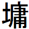

| 「嵐が丘」の構造 ～作品に潜むシンメトリーと易経～ | |
| 西孝二郎 | |
| Nishi Kojiro (2014) | |
『嵐が丘』の構造 ～作品に潜むシンメトリーと易経～
西 孝 二 郎
『嵐が丘』がシンメトリカルな構造を持っていることは、かねてより指摘されていることである。その点について、廣野由美子氏の『十九世紀イギリス小説の技法』(英宝社)の第三章「嵐が丘」より要約してみると、以下のようになる。
①冒頭の三章(第１章～第３章)は、旅人ロックウッドによる嵐が丘訪問記であり、最終(第32 章～第34 章)の三章も、彼が再度そこを訪問したときのことが描かれている。ここにまず対称形の枠組みが見出せる。
②この枠組みの中に収められた中心部分のうち、前半(第４章～第17 章)は、キャサリン１世とヒースクリフの関係を中心とした第一世代物語、後半(第18 章～第31 章)は、キャサリン２世とヘアトンの関係を中心にした第二世代物語である。つまり二つの物語は、十四章ずつ均等に配分されている。したがって、構成のうえでは、両者に同等の比重がかけられている。
③前半と後半の物語には、いずれも女主人公を頂点とした三角関係の構図が見出される。すなわち、前半の第一世代物語ではキャサリン１世とヒースクリフの恋愛関係の中に、キャサリン１世の夫エドガーがいて、後半の第二世代物語ではキャサリン２世とヘアトンの恋愛関係の中に、キャサリン２世の夫リントンがいる。
④ただし、第一世代と第二世代の恋愛物語は、逆の展開をたどる。第一世代のキャサリン１世とヒースクリフの関係は、仲良しだった「黄金時代」から始まり、キャサリン１世の死という「苦難時代」へと至る。一方、第二世代のキャサリン２世とヘアトンの関係は、両者が対立する「苦難時代」から始まり、恋愛、結婚という「黄金時代」へ至る。
⑤第一世代物語において、ヒースクリフが失踪してからキャサリン１世と再会するまでの間、また、第二世代物語において、キャサリン２世が初めてヘアトンと出会ってから彼と再会するまでの間には、ともに三年間という歳月が流れている。そして、作品ではその再会までの期間がいずれも完全に削除されている(これは単なる偶然の一致というよりも、構成上の共通点として注目すべきものであろう、と廣野氏は述べている)。
このように明らかにシンメトリーを意識した構成が『嵐が丘』を貫いており、他にも、アーンショー家とリントン家の家系図の対称性というようなこともある。
だが、(ここから本書の独自の解釈となるのだが)このシンメトリーは、上記のような大まかなものだけにはとどまらない。作品の極めて細部にまで対称を形作る糸は及んでおり、小説の中心を境にして前後で対応する一章ごとに、対称模様は織り成されているのである。
すなわち、最初の第１章と最後の第34 章、この二つの章の内容には多くの一致点がある。第２章と第33 章、この二つの章の間にもいくつもの共通の要素が見出される。第３章と第32 章も同様に......という形があるのだ。
このような形において、『嵐が丘』は全34 章であるから、17 の対応があることになり、それは以下の通りである。
第１章(第１部第１章)と第34 章(第２部第20 章)
第２章(第１部第２章)と第33 章(第２部第19 章)
第３章(第１部第３章)と第32 章(第２部第18 章)
第４章(第１部第４章)と第31 章(第２部第17 章)
第５章(第１部第５章)と第30 章(第２部第16 章)
第６章(第１部第６章)と第29 章(第２部第15 章)
第７章(第１部第７章)と第28 章(第２部第14 章)
第８章(第１部第８章)と第27 章(第２部第13 章)
第９章(第１部第９章)と第26 章(第２部第12 章)
第10 章(第１部第10 章)と第25 章(第２部第11 章)
第11 章(第１部第11 章)と第24 章(第２部第10 章)
第12 章(第１部第12 章)と第23 章(第２部第９章)
第13 章(第１部第13 章)と第22 章(第２部第８章)
第14 章(第１部第14 章)と第21 章(第２部第７章)
第15 章(第２部第１章)と第20 章(第２部第６章)
第16 章(第２部第２章)と第19 章(第２部第５章)
第17 章(第２部第３章)と第18 章(第２部第４章)
以上のような章ごとの対応を念頭において、『嵐が丘』を詳しく読んでいくと、前述の大まかな対称性だけでなく、極めて細部にまでわたる対称構造が存在していることが明らかになってくるのである。
ではまず、分かりやすい例として、第８章(第１部第８章)と第27 章(第２部13 章)を挙げて、この二つの章の共通点に注目してみよう。
第８章......嵐が丘屋敷は主人のヒンドリーと召使のジョウゼフが留守にしているため、キャサリン１世がエドガーを屋敷に招いて会う。
第27 章......嵐が丘屋敷は、ヘアトン・女中のジラ・召使のジョウゼフが、みな留守にしているため、ヒースクリフがキャサリン２世を招いて、リントンに会わせる。
第８章......キャサリン１世が女中のエレンに平手打ちをする。さらに、エドガーにも激しい一発を見舞う。
第27 章......ヒースクリフがキャサリン２世に強烈な平手打ちの連打を浴びせる。
第８章......嵐が丘の屋敷で、エドガーがキャサリン１世にプロポーズをする。(ただし、そこでプロポーズがあったということは、次の第９章においてキャサリンの口から語られて初めて知れる)
第27 章......嵐が丘の屋敷で、リントンがキャサリン２世にプロポーズをする。
このように、「他の者が留守のときにお客を招く・激しい平手打ち・プロポーズ」という三つもの点で、この二つの章は一致している。これだけでも、『嵐が丘』のシンメトリーが章ごとの対応にまで及んでいることは明らかと言いたくなるくらいである。
それでは以下に、全17 通りの対応すべてについて検証していきたいと思うが、その前に注意すべき点をいくつか述べておきたい。
対応する二つの章の内容においては、主語が規則的に対応しているということは全然ない。主語の部分の対応はばらばらであり、一致しているのは、その述語の部分、出来事の性質の部分だけである。
だから、一方の章ではキャサリン２世がやっていることを、対応するもう一方の章ではジョウゼフがやっていたり、一方ではヒースクリフのやっていることを、もう一方の章ではヒンドリーがやっていたり、あるいは犬がやっていたりするということもある。また、一方の章では、別々の人物によってなされたことが、対応するもう一方の章では、一人の人物によってなされるというようなこともある。人物の対応がばらばらであるから、その行為を誰がなすかによって、同じ要素、同じ性質の出来事でも、見た目はかなり違ってくるため、このような一致があることが分かりにくいものになっているのである。
また、二つの章の間で対応する出来事は、同じような順番で起こることもあれば、逆の流れで起こることもある。一方の章では冒頭に置かれている出来事が、もう一方の章では最後のところにあるというようなこともある。
さらに、一方の章では、いくつかの出来事に分散して存在している要素が、もう一方では、一つの出来事のうちに集約的に表わされているというような場合もある......。
以上のことを理解した上で、『嵐が丘』の対称構造を解明していこう。
*
§【第１章(第１部第１章)と第34 章(第２部第20 章)】
第１章......スラッシュクロスの屋敷を今度借りることになったロックウッド。
第34 章......スラッシュクロスの屋敷にまもなく移ることになるヘアトンとキャサリン２世。
第１章......嵐が丘屋敷でのヒースクリフの様子を描いた場面が多くを占める。ヒースクリフは人間嫌いの印象をロックウッドに与える。
第34 章......嵐が丘屋敷でのヒースクリフの様子を描いた場面が多くを占める。ヒースクリフは一人になりたがることが多い。
第１章......ロックウッドの様子を油断なく見張っている犬。やがて、犬は四本足の悪鬼(fiends)のようにロックウッドに襲いかかる。
第34 章......何かの幻を凝視しているヒースクリフ、絶対にそれから目を離さない。その後、エレンは、ヒースクリフの顔は鬼(goblin)であったと語る。食屍鬼(ghoul)・吸血鬼(vampire)とも表現する。エレンがそういうふうに感じていることを察したヒースクリフは、「おれを鬼(fiend)だと思っているだろう」とエレンに言う。
第１章......(冒頭)嵐が丘にやってきたロックウッドは、騒がしい世間からこれほど隔絶したところはない、人間嫌いにとっては天国のようだと思う。
第34 章......(最後)エドガー、キャサリン１世、ヒースクリフの墓の並ぶ場所にやってきたロックウッド、こんな静かな大地の下に休む人の眠りが、安らかでないかもしれないなどと、誰が考えつくだろう、と思う。
(※静かであること、天国的であること、で両者は一致していると言える)
§【第２章(第１部第２章)と第33 章(第２部第19 章)】
第２章......門の鎖がはずせないロックウッド。
第33 章......解くことのできない鎖のような、ヒースクリフとヘアトンの強い絆。
第２章......嵐が丘屋敷の食卓における食事の場面が多く描かれている。
第33 章......嵐が丘屋敷の食卓における食事の場面が多く描かれている。
第２章......キャサリン２世は、彼女を罵ったジョウゼフに対して「私を怒らせない方がいい。悪魔に頼んでお前をさらってもらう」「さっさと消えないとひどい目に会わせる」と言う。
第33 章......ヒースクリフは、彼を罵ったキャサリン２世に対して「おれを怒らせないようにしろ。さもないといつか本当に殺してしまう」「出て行け」と言う。
第２章......屋敷の外へ飛び出したロックウッドに犬が襲い掛かり、ロックウッドを押し倒す。しかし、犬はそれ以上危害を加えようとせず、あくびをして尾を振る。
第33 章......本気で怒ったヒースクリフは、キャサリン２世に襲いかかり髪を引っつかむが、そこで気が萎えて、危害を加えずに手を放す。
§【第３章(第１部第３章)と第32 章(第２部第18 章)】
第３章......泊めてもらった部屋に本が何冊かあったので片っ端から読むロックウッド。
第32 章......エレンが本をたくさん持ってきてくれたので、本を読めるようになったキャサリン２世。本を読むことを拒否していたヘアトンも強情を解いて読み始める。
第３章......仲良くなっているキャサリン１世とヒースクリフ。彼らを叱るジョウゼフ。
第32 章......仲良くなっているキャサリン２世とヘアトン。驚いて呆気にとられるジョウゼフ。
第３章......ロックウッドが、嵐が丘屋敷の部屋でそこにあった本を開く。その本の中にあった書き込みは、大旦那アーンショーが死んで間もない頃のものであった。
第32 章......ロックウッドがスラッシュクロスと嵐が丘を久しぶりに訪ねる。それは、屋敷の主人だったヒースクリフが死んで間もない頃(三ヵ月後)のことであった。
第３章......ジョウゼフがキャサリンを平手で打ち、良い本はいくらでもあるから読めと言う。
第32 章......ヘアトンに本を読ませているキャサリン２世、ヘアトンの注意が散漫になると、彼の頬をぴしゃりと打ち、本を読ませつづける。
第３章......ジョウゼフがつまらない本をキャサリン１世とヒースクリフに押しつけるが、二人はそれを投げ捨てる。
第32 章......キャサリン２世はヘアトンが本を読むように仕向けるが、ヘアトンは本を投げ捨て、しばらくは頑なに拒む。
第３章......フランシスはヒースクリフの髪を力いっぱい引っぱる。その直後、夫ヒンドリーと赤ちゃんみたいにキスをしたり、長々とおしゃべりをする。
第32 章......キャサリン２世は「髪の毛を引っぱるわよ」とヘアトンを脅す。その直後、二人はお互いにキスをし、話しながら散歩に行く。
第３章......途中の道からは案内なしで、一人でスラッシュクロスに向かうロックウッド。
第32 章......従者を村に残し、一人でスラッシュクロスに向かうロックウッド。
第３章......眠りに落ちたロックウッドは夢を見る。
第32 章......キャサリン２世はヘアトンに「どんな夢を見る？」と尋ねる。しかし、ヘアトンが返事をしないので、キャサリン２世は、「この人、今、夢を見てるのかも」と言う。
第３章......夢の中で、小さな子供(キャサリン１世)の手にしがみつかれたロックウッドが、その子供の手首を割れたガラスに押しつけると、血が流れ出した。
第32 章......ヘアトンは、猟銃が暴発したため、破片で腕に怪我をして出血する。
第３章......(ロックウッドの夢の中で)窓の外に現われたキャサリン１世は(手首から出血後も)「入れてちょうだい」と懇願し泣き続ける。ロックウッドは割れた窓ガラスを本でふさぐが、その悲痛な願いは聞こえ続けるため、「行ってしまえ！」と言ってその要求を頑なに拒否する。
第32 章......(ヘアトンの出血の話の後)、キャサリン２世が窓ガラスに絵を描いていたため、エレンが「窓からの明かりをさえぎられると仕事ができない」と注意する。直後、キャサリン２世はヘアトンに近寄り、自分と仲良くしてくれるように懇願するが、ヘアトンは「消え失せろ」と言って頑なに拒否する。
(※右の二つの場面は、手から出血→窓をふさぐ→キャサリンの懇願→それへの拒絶、という展開で一致しており、その点で、第17 章のヒンドリーが腕にけがをした場面や、最終章でヒースクリフの死体の腕に傷があった場面とは、区別されるべきものである。もっとも、第17 章の場面には、外に閉め出しを食らったヒースクリフが「中に入れろ」と何度も命令する場面があって、それは、第３章・第32 章とさらに一致する部分ではある)
§【第４章(第１部第４章)と第31 章(第２部第17 章)】
第４章......隠遁生活の憂鬱と孤独に耐えられなくなったロックウッド。
第31 章......屋敷に閉じ込められた生活がつくづく嫌になったキャサリン２世。
第４章......ヒースクリフに馬を取り替えようと言われるが拒否するヒンドリー。しかし、結局、馬を渡してしまう。
第31 章......エレンからの手紙をキャサリン２世に渡すことを拒むヘアトン。しかし、結局、渡してしまう。
第４章......大事にされても感謝する様子をまったく見せないヒースクリフ。
第31 章......ロックウッドが挨拶しても知らん顔しているキャサリン２世。
第４章......ヒンドリーは、ヒースクリフの顔を叩く。
第31 章......ヘアトンがキャサリン２世を手で叩いた音がロックウッドに聞こえる。
第４章......無口なヒースクリフの様子。
第31 章......一言も口を利かないヘアトンの様子。
第４章......ロックウッドの食事の場面。
第31 章......ロックウッドの食事の場面。
第４章......ヒースクリフを特別にかわいがるアーンショー。
第31 章......ロックウッドは、エレンがあなたのことを褒めてばかりいますとキャサリン２世に伝える。
第４章......捨て子で哀れなヒースクリフの状況が語られる。
第31 章......教育から遠ざけられ、無知蒙昧のヘアトンの状況について語られる。
第４章......ヒースクリフをいじめるヒンドリーやエレン。しかし、エレンは後にヒースクリフにある程度理解を示す。
第31 章......ヘアトンの無知蒙昧ぶりをバカにするキャサリン２世。しかし、ロックウッドはヘアトンに理解と同情を示す。
第４章......主人のアーンショーが屋敷を留守にする。後、帰ってくる。
第31 章......主人のヒースクリフが屋敷を留守にしている。後、帰ってくる。
第４章......アーンショーが子供たちのためにお土産としてヴァイオリンと鞭を買ってきたが、ヴァイオリンは粉々になっていて、鞭は紛失してしまっていた。
第31 章......ヘアトンがキャサリン２世のために本を持ってくるが、バカにされたので本を焼き捨てる。
第４章......脅されて馬を渡さなければならなくなったため、「お父さんをだまして、全部まきあげればいいさ」とヒースクリフを罵るヒンドリー。
第31 章......取り上げられた自分の本をヘアトンが持っていたため、「ヒースクリフをそそのかして、自分の宝物である本を奪った」とヘアトンを非難するキャサリン２世。
§【第５章(第１部第５章)と第30 章(第２部第16 章)】
第５章......アーンショーのいらいら・短気の様子が描かれる。
第30 章......キャサリン２世がだれにでもつっかかっていく様子が語られる。
第５章......アーンショー死ぬ(キャサリン１世のそばで)。
第30 章......リントン死ぬ(キャサリン２世のそばで)。
第５章......横柄なキャサリン１世の態度を繰り返し話すエレン。
第30 章......お高くとまったキャサリン２世の態度を繰り返し話すジラ。
第５章......体力が落ちたため、暖炉のそばに座りきりになったアーンショー。
第30 章......寒いので、二階の部屋から降りてきて暖炉のそばに座り込んだままになるキャサリン２世。
第５章......暖炉のある部屋で聖書を読むジョウゼフ。
第30 章......暖炉のある部屋で本を読むキャサリン２世。
第５章......キャサリン１世の髪をなでる父アーンショー。
第30 章......キャサリン２世の髪に触れるヘアトン。
第５章......キャサリン１世が横柄なため、父は「お前のことがかわいいと思えない」と言う。
第30 章......キャサリン２世がお高くとまっているので、ジラは家の者みんなが彼女を嫌っていると話す。
第５章......アーンショーを恐れて、言いつけどおりヒースクリフを大事にする家の者。
第30 章......ヒースクリフを恐れて、彼の言いつけに従う使用人たち。
第５章......二階の部屋で慰めあうキャサリン１世とヒースクリフ(章の最後の方)。
第30 章......二階の部屋でリントンを看病するキャサリン２世(章の最初の方)。
§【第６章(第１部第６章)と第29 章(第２部第15 章)】
第６章......アーンショーの葬式の日。
第29 章......エドガーの葬式の済んだ晩。
第６章......些細なことに病的におびえるフランシス。
第29 章......ヒースクリフに病的なまでにおびえるリントン。
第６章......キャサリン１世とヒースクリフ、一緒にスラッシュクロス屋敷を見に行く。
第29 章......キャサリン２世とヒースクリフ、腕を組み、一緒に嵐が丘の屋敷に歩いていく。
第６章......怪我をしたため、スラッシュクロス屋敷にしばらく留め置かれて暮らすことになったキャサリン１世。
第29 章......嵐が丘に連れて行かれ、そこで暮らすことになったキャサリン２世。
第６章......一人だけスラッシュクロスを追い返されるヒースクリフ。キャサリン１世と一緒でなければいやだと言うがスラッシュクロスの人に拒否される。
第29 章......嵐が丘に連れて行かれるキャサリン２世。エレンは自分も一緒に連れて行ってくれと頼むがヒースクリフに拒否される。
第６章......いつもキャサリン１世と一緒のヒースクリフ。
第29 章......死んだキャサリン１世がそばにいると感じるヒースクリフ。
第６章......ヒースクリフが、スラッシュクロス屋敷の窓から覗いたとき見えたキャサリン１世の顔は幸せそうだった。
第29 章......ヒースクリフがキャサリンの墓を掘り、棺を開けて覗いたとき見えたキャサリン１世はきれいな顔だった。
第６章......召使いの身分に落とされ働かされるようになったヒースクリフ。
第29 章......ヒースクリフは、キャサリン２世にも働いてもらうと言う。すなわち、働かされるようになったキャサリン２世。
§【第７章(第１部第７章)と第28 章(第２部第14 章)】
第７章......キャサリン１世が、５週間の留守から帰ってくる(スラッシュクロスから嵐が丘へ)
第28 章......キャサリン２世、５日ぶりに帰ってくる。(嵐が丘からスラッシュクロスへ)
第７章......キャサリン１世に怒るヒースクリフ。
第28 章......キャサリン２世に怒るヒースクリフ。
第７章......ヒースクリフが、エドガーにアップルソースをぶちまける。
第28 章......ヒースクリフが、エドガーの描かれた絵を踏みつけ粉々にする。
第７章......ヒンドリーが、ヒースクリフを屋根裏に閉じ込めこらしめる(暴力をふるう)。
第28 章......ヒースクリフが、キャサリン２世を一室に閉じ込め、あることから彼女を殴り倒す。
第７章......キャサリン１世は天窓から出入りし、ヒースクリフの閉じ込められている屋根裏部屋へ行って、ヒースクリフとともにその部屋から出てくる(つまりヒースクリフを脱出させる)。
第28 章......リントンは、キャサリン２世のために鍵を開けておいて、キャサリンを閉じ込められていた部屋から脱出させる。部屋を出たキャサリンは、他の部屋の窓から家の外に脱出する。
(※脱出させる、窓からの出入り、という要素で両者は一致している)
§【第８章(第１部第８章)と第27 章(第２部第13 章)】
第８章......ヒンドリーもジョウゼフも留守にしているので、エドガーを屋敷に招いたキャサリン１世。
第27 章......ヘアトン、ジョウゼフ、ジラ、みんな留守なので、キャサリン２世を屋敷に招いてリントンに会わせるヒースクリフ。
第８章......エドガーがキャサリン１世にプロポーズする(このときにプロポーズされたということは次の第９章でキャサリン１世が語る)。
第27 章......リントンがキャサリン２世にプロポーズする。
第８章......キャサリン１世は、エレンに平手打ちをする。さらに、エドガーの顔にも強烈な一撃を食わせる。
第27 章......ヒースクリフは、キャサリン２世に強烈な平手打ちの連打を浴びせる。
第８章......エレンをつねるキャサリン１世。
第27 章......リントンをつねって泣き声を云々と言うヒースクリフ。
§【第９章(第１部第９章)と第26 章(第２部第12 章)】
第９章......キャサリン１世は、夢の中で天国(heaven)にいた話をする。しかし、キャサリン１世にとって、その天国は自分に合わない。
第26 章......ここはリントンが(第24 章で)言っていた天国(paradise)みたいだと言うキャサリン２世。しかし、キャサリンの思い描く天国はリントンのとは全く違うものであることが、第24 章で言われている(第26 章ではparadiseと表現されているが、第24 章ではheavenである)。
第９章......キャサリン１世は、ヒースクリフがいなくなったのでうろたえて探す。さっきの話をヒースクリフに聞かれてしまったのではないかと不安に思う。そして、雨に濡れて重病になる。
第26 章......リントン、重病そうな様子。ヒースクリフが来てないかおびえてきょろきょろ探す。ヒースクリフにここでの様子を見られるのはまずいと不安に思う。
第９章......やはりキャサリンは自分に関わることでなければ悩んだりするはずはなかった、と語るエレン。
第26 章......リントンは自分のことばかり考えている病人、と語るエレン。
第９章......眠っているヘアトン。
第26 章......眠っているリントン。
第９章......息子ヘアトンを手荒に扱うヒンドリー。
第26 章......息子リントンに厳しくするヒースクリフ。
第９章......ヘアトンの父ヒンドリーが来ることを恐れるエレン。
第26 章......父ヒースクリフが来ることを恐れて、それだけで頭がいっぱいのリントン。
第９章......秘密を守ってくれ、とエレンに頼むキャサリン１世。
第26 章......自分の元気のない様子を、エドガーやヒースクリフに言わないでくれとキャサリン２世に頼むリントン。
第９章......キャサリン１世の話に失望し、そっと部屋を出て行くヒースクリフ。
第26 章......リントンの様子に失望し、引き留められても帰ってしまうキャサリン２世。
§【第10 章(第１部第10 章)と第25 章(第２部第11 章)】
第10 章......イザベラがヒースクリフの愛を求める。ヒースクリフは凶暴で冷酷な人間だからやめた方がいい、とキャサリン１世はイザベラを説得するが、イザベラが応じないので、もう好きにしなさいと言う。また、ヒースクリフは財産や遺産目当てにイザベラと結婚することはあり得るとキャサリン１世は言う。
第25 章......リントンがキャサリン２世との交際を求めている。エドガーは、リントンがつまらない人間でヒースクリフの操り人形に過ぎないなら結婚はだめだと言うが、そうでないなら、キャサリン２世がリントンと結婚するのはかまわないと言う。また、先祖からの屋敷をキャサリン２世に残してやろうと思えば、自分の相続人であるリントンと結婚するしかないとも言う(つまり、こちらも財産目当ての結婚という一面がある)。
第10 章......ヒースクリフの心の中心にあるのは言うまでもなくキャサリン１世への愛だが、そのヒースクリフに心を寄せるイザベラの存在、という構図。
第25 章......キャサリン２世の心の中心を占めているのはエドガーへの愛情だとエレンは語るが、そのキャサリン２世に心を寄せるリントンの存在、という構図。
第10 章......エドガーは、キャサリン１世がヒースクリフに会うことを許す。
第25 章......エドガーは、キャサリン２世がリントンに会うことを許す。
第10 章......イザベラ、自分のまわりはみんな敵ばかりだと言う。
第25 章......リントン、自分に好意を持つはずのない人たちに囲まれて生きていると手紙に書く。
第10 章......エドガー、体調が急速に悪化。
第25 章......リントン、体調が急速に悪化。
§【第11 章(第１部第11 章)と第24 章(第２部第10 章)】
第11 章......エレンは、ヘアトンにオレンジをやって、嵐が丘のヒンドリーへの取次ぎを頼む。
第24 章......キャサリン２世は、下男に本をやって、リントンに会いに行くための馬の準備をしてもらう。
第11 章......ヒースクリフがキャサリン１世に会いに来る。しかし、家の中に入る前に、中庭にいたイザベラに話しかける。キャサリン１世らに見られたイザベラは逃げていく。
第24 章......キャサリン２世がリントンに会いに行く。しかし、家の中に入る前に、庭に出てきたヘアトンと話す。バカにされたヘアトンは退散する。
第11 章......キャサリン１世はエドガーを弱虫だと罵る。ヒースクリフも一緒になって罵り始めたところで、エドガーはヒースクリフののどに報復の一撃を加える。ヒースクリフは息が止まり、のどを詰まらせた。さらに、エドガーが召使を三人引き連れてきたので、ヒースクリフは逃げていった。
第24 章......キャサリン２世はヘアトンをバカにする。やがて、キャサリン２世とリントンが一緒にいる部屋へヘアトンが入って来て、さっきの報復としてリントンを部屋からたたき出す。リントンはしばらく喚いていたが、そのうち咳の発作を起こし、声が出なくなって、血を吐いて倒れてしまった。
(※順序は入れ替わっているが、バカにする、報復する、追い出す、のどに異常をきたす、という点で両場面は一致する。)
第11 章......エドガーはキャサリン１世に、ヒースクリフと会うことをやめるようにと言う。
第24 章......エドガーはキャサリン２世がリントンに会いに行くことを禁止する。
§【第12 章(第１部第12 章)と第23 章(第２部第９章)】
第12 章......キャサリン１世が病気になり、自分はみんなに嫌われている気がしてきた、みんな敵だと言う。また、死にそうだと言って夫エドガーの同情を引こうとする。やがて、書斎に引きこもっていたエドガーが現われ、キャサリンを抱きしめ宥める。
第23 章......リントンは病気であり、家の者はみんな嫌なやつばかりだと言う。彼はひどく苦しむまねをしてキャサリン２世の同情を引こうとする。帰ろうとしていたキャサリン２世はリントンに駆け寄って慰める。
第12 章......イザベラとヒースクリフがこっそり会っていた。
第23 章......キャサリン２世は家を抜け出し、こっそりリントンと会っていた。
第12 章......部屋の床に倒れたままになるキャサリン１世。
第23 章......椅子から転げ落ち、床にはいつくばるリントン。
§【第13 章(第１部第13 章)と第22 章(第２部第８章)】
第13 章......キャサリン１世、脳炎になる。
第22 章......エドガー、肺を悪くする。
第13 章......キャサリン１世は自分の死んだ時のことを語り、自分の死後に残されたエドガーのことを想像する。
第22 章......エレンは、エドガーや自分が死んだときのことを考えるようキャサリン２世を促す。エドガーや自分の死後に残されたキャサリン２世について想像するエレン。
第13 章......イザベラは手紙を出すが、エドガーから返事はもらえない。そこで、イザベラはエレンに手紙を書いて、自分のところに来てくれるように頼む。
第22 章......リントンはキャサリン２世から返事をもらえなくなる。そこで、たまたまキャサリン２世に会ったヒースクリフが、リントンに会いに来てくれるようキャサリン２世に頼む。
§【第14 章(第１部第14 章)と第21 章(第２部第７章)】
第14 章......エレン、久しぶりに嵐が丘の屋敷に行く。ヒースクリフに連れて行かれたイザベラと再会。
第21 章......キャサリン２世、久しぶりに嵐が丘の屋敷に行く(エレンとともに)。ヒースクリフに連れて行かれたリントンとの再会。
第14 章......イザベラの手紙に応えてヒースクリフとイザベラのもとを訪れたエレンは、主人エドガーからの言伝として、「両家の交際は断絶しよう」との旨を伝える。
第21 章......キャサリン２世とリントンが手紙のやり取りをしていることに気付いたエレンは、それを妨害し、「今後お手紙はいっさいお断り」と書いた紙をリントンに送る。
第14 章......ヒースクリフは、自分へのイザベラの愛を妄想だと言ってバカにする。
第21 章......エレンは、リントンへのキャサリン２世の恋を子供っぽい想像の産物だと考えバカにする。
第14 章......ヒースクリフはエレンに、キャサリン１世への手紙の仲立ちを頼む。エレンは何度も断ったが、結局引き受けてしまう。
第21 章......キャサリン２世は、リントンに手紙を出すのを許してほしいとエレンに頼むが拒否される。しかし、牛乳集めの少年に託して手紙を渡す。
第14 章......ヒースクリフは、ゆうべ、スラッシュクロス屋敷の庭に６時間いた、今夜も行く、毎日、夜も昼も通うつもりだと言う。
第21 章......嵐が丘の屋敷に来たキャサリン２世、これからは毎朝ここまで散歩してくると言う。
§【第15 章(第２部第１章)と第20 章(第２部第６章)】
第15 章......キャサリン１世に会わせるというヒースクリフとの約束を果たすエレン。
第20 章......リントンを嵐が丘に連れて行くというヒースクリフとの約束を果たすエドガーとエレン。
第15 章......病気のキャサリン１世はエレンに、今は自分をかわいそうだと思っているだろうが、でももうすぐ逆になる。自分はみんなより高いところに行くのだから、今度は自分がエレンをかわいそうだと思うようになる、と言う。
第20 章......ヒースクリフは、リントンを大事に育て、スラッシュクロス屋敷の持ち主とならせて、今の持ち主(エドガー)の子供たちを、先祖の土地を耕作する身分に落としてやると言う。
(※右の二つの場面は、立場を逆転させるという意味で共通である)
第15 章......やってきたヒースクリフにキャサリン１世は悪態をつく。しかし、結局、ヒースクリフの胸に飛び込んでいく。
第20 章......やってきたリントンをヒースクリフはさんざん罵る。しかし、結局、大事に世話をするから大丈夫だと言う。
第15 章......帰ろうとするヒースクリフに「行っちゃだめ」とすがりつくキャサリン１世。
第20 章......帰ろうとするエレンに「帰っちゃだめ」と叫ぶリントン。
§【第16 章(第２部第２章)と第19 章(第２部第５章)】
第16 章......キャサリン１世死ぬ。
第19 章......イザベラ死ぬ。
第16 章......キャサリン２世誕生。
第19 章......リントン登場。
第16 章......ヒースクリフは、死んだキャサリン１世に「おれのところに出てこい」と強く呼びかける。
第19 章......エドガーのもとを訪れたジョウゼフは、「リントンをおれのところへ連れてこい」というヒースクリフの命令を強い口調で伝える。
第16 章......キャサリン１世の最後の思いは、楽しかった子供時代に帰っていただろうと語るエレン。
第19 章......楽しそうな子供のキャサリン２世の様子。
§【第17 章(第２部第３章)と第18 章(第２部第４章)】
第17 章......イザベラは嵐が丘の屋敷を逃げ出してきて、スラッシュクロスの屋敷に立ち寄る。
第18 章......キャサリン２世は、スラッシュクロスの敷地の外へ飛び出していって、嵐が丘の屋敷に立ち寄る。
第17 章......スラッシュクロスに立ち寄ったイザベラは、耳の下に傷を負い、出血していた。
第18 章......嵐が丘に立ち寄ったキャサリン２世のお伴の犬が、耳から血を流していた。
第17 章......「ヒースクリフを絞め殺す力を神が与えてくれたら、喜んで地獄へ行く」と言うヒンドリー。「ヒンドリーがヒースクリフを地獄に送ってくれれば幸せだ」「嵐が丘でもう一晩過ごすくらいなら、地獄に住めと言われる方がまし」と考えるイザベラ。
第18 章......キャサリンに「おまえの下男になるくらいなら、先におまえが地獄へ落ちるのを見届けてやる」と言うヘアトン。「地獄に落ちる」の部分を繰り返す。
第17 章......ヒンドリーが戸を閉め切ったため、屋敷の中に入れないヒースクリフは、「開けろ」と何度も命令するが、ヒンドリーとイザベラは言うことを聞かない。
第18 章......嵐が丘から帰ろうとしてキャサリンは、「自分の馬を連れてきて」と何度も命令するが、ヘアトンや女中は言うことを聞かない。
『嵐が丘』を読み返していたとき、第３章の、ロックウッドが木立の中で迷ってしまう場面で、ふと『易経』の「屯 」という卦を想起した。『易経』の「屯」卦を説明する文章の中には、「鹿を追いて林中に入る」(案内者もなく鹿を負って林の中に迷い込む)という言葉があるからである。この「林の中に迷い込む」という言葉と、ロックウッドが木立の中で迷ったという場面が二重映しになって見えてきたのである。もちろん、ロックウッドは鹿を追っていたわけではないが、林の中に迷い込むという点では一致しており、しかも、この「屯」という卦は、『易経』の３番目の卦なのである。ロックウッドが木立の中で迷うのが、第３章であることと数字の上でも符合している......、ここで、まず注意を惹かれてしまったのだ。
『嵐が丘』と『易経』が関係があるなどということは、あまりにもありそうもないことのように思われたが、しかし、ここから、その両者の関係の可能性を探ってみずにはいられなくなったのである。
そうすると、他の章でも、比較的簡単に『易経』との合致を見出さずにはいなかった。たとえば、『易経』７番目の「師 」には、たくさんの人という意味があるが、『嵐が丘』第７章には、クリスマスの屋敷にたくさんの人が集まる情景が描かれている。
また、『易経』12 番目の「否 」は陰陽が交わらず背きあうという意味を持つ卦であるが、『嵐が丘』第12 章は、夫婦であるエドガーとキャサリン１世の関係が極度に悪化するところである......などなど。
ここから、『嵐が丘』の各章と『易経』の卦は、同じ位置にあるものどうしで対応している、『嵐が丘』は対応する易卦の意味を取り入れながら描かれた作品である、という解釈に至ったのである。
しかし、当時のイギリスで、エミリが『易経』について、詳しく知り得る機会を持つことが可能であったのかという問題もある。『易経』は、17 ～18 世紀の哲学者ライプニッツがその著作において言及している箇所があるが、彼は一七〇三年に宣教師から易に関することを教えてもらったのだという。
また、18 世紀前半にはフランス人宣教師レギによって全文がラテン語に訳されており、これがある程度流布したようだ。エミリ・ブロンテはラテン語が読めたという。そうであればここに、エミリが易と接触する可能性が存在することになる。しかも、宣教師が易の流布に役割を果たしているところを見ると、牧師の娘であるブロンテは、その経路で易を知り得たという可能性も浮上するわけである。
一八三八年に書かれた渡辺崋山 の『鴃舌或問 』と『慎機論 』には、イギリスの宣教師で中国研究家であるロバート・モリソンが、『周易』(『易経』のこと)などを洋字に訳した、との記述がある。現存しているモリソンの中国関係の著作は英語で書かれているものであるから、崋山が述べている『周易』の翻訳というのも、英語への翻訳である可能性が高い。だが、モリソンについて調べても、『易経』の翻訳本を出したという事実は見つからない。ただ、一八一七年に出版されたモリソンの著作において、易の八卦・十二支・河図・洛書などといったものについて述べてあるのを確認することはできる。
また、エミリと同時代のフランスの魔術師エリファス・レヴィは、その著作の中で易に言及し、「易の三つの爻 (陰陽を示す横線)と西洋魔術の三角形は同じものである」などと述べており、以上のことから、この時代のヨーロッパでは、『易経』はそれなりに知られた存在であったことは窺われるのである(易に言及したレヴィの著作は一八五六年のものであるから、エミリの死後のものではある)。
ともあれ、エミリが易に触れる可能性をもたらすものとしては、前述のレギのラテン語訳がもっともその可能性が高い。しかし、この点については、これ以上、はっきりしたことは分からないので、可能性を示すだけで十分であると思う。問題は、『嵐が丘』と『易経』の一致という観点からの検証の結果がどうであるか、両者の一致をどの程度まで客観的に示すことができるかどうか、にかかってくる。
それでは以下に、『嵐が丘』の各章と易卦の対応について検証した結果を述べていきたいが、その前に一つ注意すべき点がある。
それは、易との対応が一通りだけではないということである。『嵐が丘』第１章と易１番目の「乾」、第２章と易２番目の「坤」......という対応(これを順対応と呼ぶことにする)はおそらく二巡するのである。すなわち、第34 章に易34 番目の「大壮」が対応した後、最初に戻り、第１章に易35 番目の「晋」が対応し、第２章に易36 番目の「明夷」が......となっていく。
さらに、『嵐が丘』の構造がシンメトリーを形成しているのと同様に、易との対応もシンメトリカルなものになっているようである。すなわち、最後の第34 章に易１番目の「乾」、第33 章に易２番目の「坤」......という逆方向の対応(これを逆対応と呼ぶことにする)もあるようで、そして、これも二巡するようなのだ。
つまり、順対応・逆対応があり、それぞれが二巡するということで、『嵐が丘』の各章にはそれぞれ四つの卦が当てはまっているということになる。
しかし、それらを全て述べていこうとすると、込み入ってきてひどく分かりにくいものになってしまいそうなので、以下には、ごく簡単に順対応の一巡目についてだけ述べていくことにして、特に分かりやすいと思われるところだけ、順対応の二巡目の卦についても触れることにしたい。逆対応については、その後でいくつか述べることにする。
なお、以下に易の用語がいろいろと出てくるので、それについて簡単に説明しておこう。 易六十四卦のそれぞれは、陰陽を表わす六本の横線で成り立つ(たとえば「既済」という卦なら☵☲)が、この横線を下から初爻 ・二爻・三爻・四爻・五爻・上爻という。そして、それらの爻のそれぞれにつけられた説明の文章を爻辞 という。また、それぞれの卦には、卦辞 ・彖伝 ・象伝 という説明の文もかけられており、さらに、繋辞上伝 ・繋辞下伝 ・説卦伝 ・序卦伝 ・雑卦伝 ・文言伝 というものもあって、それらも易卦についてさまざまな解説をなしたものである。
*
§【第１章(第１部第１章)】＝「乾 」(易の１番目)
冒頭、ロックウッドが馬に乗って嵐が丘にやって来て、騒がしい世間から隔絶したこのあたりの土地を、人間嫌いの者にとっては天国のようだと表現する場面、これが、まず「乾」と結び付く。というのも、乾は天という意味で、また、動物では馬に相当するからだ(説卦伝に「乾を天と為す」「乾を馬と為す」とある)。
しかも、「乾」初爻 の「潜龍 」という言葉について、文言伝は「世を逃れて憂 うることのない者」と説明しているので、世間から隔絶された場所にやってきた人間嫌い、という表現も「乾」と結び付くことになる。
天国も馬も世間からの隔絶も、この章に特徴的な要素というわけではないが、冒頭の短い部分に、これだけ集中的に「乾」の要素が現われていると、この場面を「乾」を意識しながら書かれたものとして解釈したくなるのである。
また、そのすぐ後に、ヒースクリフが門の鎖をはずして開けてくれた場面があるが、次の第２章には、この鎖がはずせないで門が開かないという対照的な状況が描かれている。
これは繋辞 上伝 にある「戸を闔 ずる、これを坤 といい、戸を闢 く、これを乾 という」を想起させずにはおかない。「乾」が対応する第１章では門が開き、「坤」が対応する第２章では門が開かないというのは、この繋辞上伝の文句を取り入れた結果なのだと思われる。
さらに、第１章の最後には、ヒースクリフがロックウッドの健康を祈って乾杯する場面があり、些細なところではあるが、これも健やかという意味を持つ「乾」に合致する部分である(説卦伝に「乾は健なり」とある)。
他に、六頭の犬がロックウッドに飛びかかってきて大騒ぎになる場面も、おそらく「乾」から着想されたものである。
というのも、乾は後天 八卦 図 において西北に置かれる卦なのであるが、その西北は十二支では戌亥(犬と猪)であり、また、洛書という数字の配当法において西北は六だからである。乾を十二支 と洛書 に結び付けて考えることによって、六頭の犬という表現が生まれてくるのだ。
もちろん、この解釈は、エミリ・ブロンテには十二支や洛書についての知識もあったということが前提となる。しかし、易経に触れる機会があったなら、同時に十二支や洛書に触れる機会も十分にあったであろう。なぜなら、これらの観念はしばしば組み合わせて表現されるものだからだ(洛書は易の繋辞上伝において言及されているものなので、易の翻訳の際にその洛書について説明が加えられていた可能性も高い)。
後天八卦・十二支・洛書の対応は以下の通りである。
坎＝子(北)＝１
艮＝丑寅(東北)＝８
震＝卯(東)＝３
巽＝辰巳(東南)＝４
離＝午(南)＝９
坤＝未申(西南)＝２
兌＝酉(西)＝７
乾＝戌亥(西北)＝６
(中央＝５)
この組み合わせは、中国において極めて基本的なものであり、日本で乾をいぬい、巽をたつみなどと読むのも、まさにここに由来するのである。
したがって、エミリに易についての知識があったのならば、十二支や洛書という観念についても、彼女が知り得た可能性は大いにあったと考えられ、そうであれば、『嵐が丘』第１章の六頭の犬を、十二支と洛書を介して「乾」を表わした場面と見做すことができるようになるのである。
(※第１章に対応する六十四卦の一つとしての「乾」は、八卦の乾を二つ重ねたものであり、八卦の乾の意味をそのまま保持している卦である)
§【第２章(第１部第２章)】＝「坤 」(易の２番目)
ロックウッドが嵐が丘屋敷に到着したとき、吹雪の最初の雪片が舞い降りてきて、大地は黒く霜で凍てついていた。そして、しばらく滞在している間に吹雪となったのであった。
この「大地に霜の降りた状況、のち吹雪」という展開は、「坤」初爻 の「霜を踏みて堅 氷 至 る」(霜の降りたのを見て、氷の張る厳寒の時期がやがて来るのを知る)を想起させるものである。
そして、吹雪となったため、ロックウッドは、道案内なしでは帰れない、案内人を付けてくれと家の人に頼む。しかし、人手がないので案内できる者はいないという返事。それでも、ロックウッドは案内をつけてくれるよう何度も繰り返し頼むのだった。
これは、「坤」の卦辞「先んずれば迷い、遅るれば主を得 」(人の先に立とうとすれば道に迷うが、人の後についていけば迷うことはない)を意識した場面と考えられる。
また、ロックウッドが嵐が丘の屋敷に着いたとき、その門は鎖で閉じられていて、ドアにも閂がおりていて、いずれも開かないのだったが、前述のように、これは「坤」が門を閉ざすという意味であることにぴたり合致する(繋辞上伝に「戸を闔 ずる、これを坤という」とある)。
さらに、お茶のときにみんなが黙りこくって、一言の会話もない様子が繰り返し描かれているが、これは、「坤」四爻 「嚢 を括る。咎 なし、慎 めば害あらざるなり」(袋の口をくくるように、口を閉ざしていれば害はない)に基づいた場面と思われる。
§【第３章(第１部第３章)】＝「屯 」(易の３番目)
嵐が丘屋敷に一泊して、次の朝、帰途についたロックウッド。途中まではヒースクリフが送ってくれたからよかったが、一人になってからは木立の中で迷ったり、雪に埋もれたりして、散々な苦労をなめたのだった。
これは、「屯」の三爻 「鹿を追いて林中 に入る」(案内もなく鹿を追って、林の中に迷い込む)に立脚した場面だろう。そもそも「屯」には行き悩むという意味があり、第三爻以外の爻にも「班如 」など、前に進めず同じ場所をぐるぐるまわるという意味の言葉が並んでいて、道に迷い、先に進むのに苦労したロックウッドの様子にぴたり当てはまっている卦なのである。
また、「屯」のその意は、ロックウッドの夢に出てきた少女(キャサリン１世)が20 年間さまよい続けたというところにも当てはまってくる。そうであれば、その少女が泣きながら悲痛な叫びを上げる様子と手首から出血する場面は、「屯」上爻「泣血 漣如 」(血の涙を流す)の血と涙という要素を取り入れたもの、という解釈も可能になる。
§【第４章(第１部第４章)】＝「蒙 」(易の４番目)
易４番目の卦「蒙」は童蒙 の意で、幼いゆえにまだ無知蒙昧な子供のことを意味する。また、暗いという意味でもある。
一方、『嵐が丘』第４章の内容を一言で言い表わせば、アーンショーが子供(ヒースクリフ)を拾ってきた、ということになる。幼く、わけのわからない言葉を繰り返すばかりのヒースクリフの姿は、まさに童蒙そのものである。また、ヒースクリフのことは、悪魔がよこしたみたいに暗い(dark)と形容されるが、この「暗い」ということも「蒙」に結び付く要素である。
§【第５章(第１部第５章)】＝「需 」(易の５番目)
易５番目の卦は「需」であるが、第５章にはこの卦を取り入れたと思われる場面は見出せない。その代わりに第４章にいくつかそれらしい場面がある。
たとえば、「需」は待つという意味の卦であるが、３日間留守をした父の帰りをみんなが待ちわびる様子、また、父の帰宅予定の夜には、子供たちが、父の帰りを待つために、まだ起きていたいと必死に願ったという場面は、待つという行為が強調されており、「需」を表現した場面であると考えることができる。
そして、帰ってきたアーンショーが子供ヒースクリフを拾ってきたという場面は、「需」上爻 「速 かざるの客三人来たるあり。これを敬すれば終 には吉なり」(思いがけない客が三人来る。これに敬意をつくして応対すれば吉である)を想起させずにはおかない。三人という要素はこの場面には含まれていないが、思いがけない客が来たという点ではまさにその通りであろう。三という要素は、アーンショーの留守の日数が三日であったというところに結び付けることができるかもしれない。
そして この「需」上爻の「これを敬すれば終 には吉」というところに基づいて、アーンショーがヒースクリフを特別に大事にする場面が作られたのではないだろうか。
このような解釈が可能であるならば、アーンショーがヒースクリフを特に大事にする様子は第５章にも引き続き描かれているから、その場面こそ第５章における「需」であるということになる。
§【第６章(第１部第６章)】＝「訟 」(易の６番目)
易６番目の卦は「訟」で、これは訴訟・争い・食い違うこと・離れ離れになることなどを意味する卦である。
一方、『嵐が丘』第６章では、スラッシュクロスのリントン家が初めて登場し、ヒースクリフがその屋敷における顛末を語る場面が、多くの部分を占めるわけだが、その屋敷の主人は治安判事なのだから、それだけで、この場面の全体が「訟」卦と関わってくることになる。
ヒースクリフが語ったスラッシュクロス屋敷での顛末とは次のようなものである。
キャサリン１世とヒースクリフが嵐が丘屋敷を抜け出して、スラッシュクロス屋敷を見に行った。窓からその家の中を覗いてみると、兄弟は喧嘩をしていて、部屋の両端に分かれて泣いたりわめいたりしている。だが、覗いている最中に音を立ててしまったので、屋敷の人たちは泥棒だと思い、犬を放す。二人は捕まり、キャサリン１世は犬に噛まれて怪我をする。屋敷の主人は、「治安判事の屋敷に押し入るとはふてぶてしい奴らだ」と言う。やがて、二人がアーンショー家の者とわかって、ヒースクリフは追い返され、雨に濡れながら帰っていったが、キャサリン１世は留め置かれて、丁重なもてなしを受けた。帰る間際にヒースクリフが窓から覗いたとき見えたキャサリン１世の姿は、世界中の誰よりもずっと上だと感じられたのであった。
ヒースクリフのこの話の中には、「訟」の要素がぎっしり詰まっている。
屋敷の主人が治安判事であることに加えて、リントン家の兄弟の喧嘩の様子も「訟」として理解できるし、ヒースクリフが捕まるまいとして抵抗した様子、リントン家の人たちが「こういう泥棒は絞首刑にするのがいい」と言ったりすること、それらも全て、争いや訴訟の意の「訟」と結び付くものである。
また、「訟」は坎 下 乾 上 、水や雨を意味する坎が下にあり、天を意味する乾が上にあるという形の卦で、下にある水は下り、上にある天は昇るから、お互いが離れ離れになる(だから、争いが起こる)というのが、そもそもの意味である。
従って、キャサリン１世とヒースクリフが捕まった際、ヒースクリフは追い出され、キャサリンは留め置かれて、二人が離れ離れになったという場面も、「訟」として考えることができる。
しかも、ヒースクリフは雨に濡れて帰ったのであり、また、帰る際に窓から見えたキャサリン１世の姿は、世界中の誰よりもずっと上だと感じられたのであるが、ヒースクリフ＝雨、キャサリン１世＝上というこの構図は、雨と天の組み合わせである「訟」に合致するものである。
そして、次の第７章冒頭では、帰ってきたキャサリン１世がきれいな服を着て上品な姿であったために、汚れたヒースクリフが気を悪くして、二人の間にいさかいが生じるのであるから、この場面までをも含めて考えることによって、この一連の場面が「訟」卦によって組み立てられていることがますます確実なものになってくるのである。
もう一つ、細かいところを付け加えておこう。
エレンは「この土地の人間は、はじめに好意を示してくる相手でない限り、めったによそ者に好意を持たないんです」とロックウッドに言うのだが、この言葉は、「訟」象伝「事をなすに始めを謀 る」(物事をなす場合には始めを慎重にして、争いが起こらないようにする)を意識した表現であると思われる。始めがだめだと好意をもたれないから始めが大事ですよ、というのがエレンの言葉の意味であるからだ。
§【第７章(第１部第７章)】＝「師 」(易の７番目)
易７番目の卦「師」はたくさんの人・群衆の意(師という漢字のそもそもの意味は、丘に集まったたくさんの人)。また、戦争・軍隊という意味もある。
『嵐が丘』第７章はクリスマスの場面。嵐が丘にはリントン家の人たちが招かれ、さらに、十五人編成の楽団がやって来て、屋敷の中にたくさんの人が集まった。この状況がまさしく「師」である。
また、エレンがヒースクリフに、エドガーなんて一発で殴り倒せるでしょうと言ったり、ヒースクリフがエドガーの身体にアップルソースを浴びせかけたり、ヒンドリーがヒースクリフに手荒なお仕置きをしたり、ヒンドリーがエドガーに対して腕力での仕返しを勧めたり、などの暴力行為の容認・応酬は、「師」の戦争という意味を意識して描かれたものなのかもしれない。
§【第８章(第１部第８章)】＝「比 」(易の８番目)
易８番目の「比」は親しむ・親密にするの意。その彖伝には「後 るる夫は凶なり」とあり、これは、何ごとも早くするのが吉で、遅れるのは凶であるという意味。
一方、『嵐が丘』第８章は、キャサリン１世がエドガーを招いた場面が主であるが、エドガーが部屋に入った際の最初の言葉は「早く来すぎたかな？」であり、これがまず「比」彖伝との関わりを感じさせる。
そして、その後、喧嘩によってエドガーは部屋を出て行くが、すぐに引き返してきて、「二人は喧嘩のせいでかえって親密になった」のであった。喧嘩のせいでかえって親密さが深まったという表現で、親密という意味がここでは強調されており、これこそ「比」そのものである。
「早く来すぎたかな」という最初の言葉と、親密になったという最後の場面、この両端の「比」に挟まれた途中の喧嘩の場面も、二人が親密になることに役立ったというわけであるから、エドガーによるキャサリン１世訪問の場面全体が、まさに「比」を表現するために作られたのもだと言えるだろう。
§【第９章(第１部第９章)】＝「小畜 」(易の９番目)
キャサリン１世は、エドガーからプロポーズされ、それを受け入れたということをエレンに語る。しかし、それでいながら、自分はまちがっている、エドガーとの結婚には向いてない、自分の魂とエドガーの魂とは月光と稲妻、霜と火ぐらい掛け離れている、と言うのだった。
キャサリン１世が、すでに結婚すると決めた相手への違和感、一種の不信感を表明するこの場面は、「小畜」第三爻「夫妻反目す」に基づいたものだと考えることができそうだ。
そして、第９章の後半には、「今にも雷が鳴りそうな気配の雲」という表現がある。これは、「小畜」彖伝「密雲あれど雨降らず」に合致する。そして、その後、激しい雨が降り出した場面は「小畜」上爻「既に雨降る」(小畜本来の意味である「雨が降らない」という状態が極点に達して、雨が降り出した)と合致する。
易の卦の上爻は、一番上の爻であり、それは、卦の意味がそろそろ終わりに達するところであって、しばしばこの「小畜」上爻のように、卦の本来の意味を覆す内容を持っているものである。
降り出した雨の中、いなくなったヒースクリフを待って外に立ちつくしていたキャサリン１世は、重病になってしまったが、なんとか切り抜けることができたのだった。これは「小畜」第四爻「血去り惕 れ出づ」(血の出るような傷も癒え、憂いも遠ざかる)における傷害からの回復という意味を、病気からの回復に置き換えて表わした場面とも考えられる。
もう一つ挙げよう。ヒンドリーが赤ん坊のヘアトンを誤って階段から落とし、偶然下を通りかかったヒースクリフがそれを本能的に受け止めたとき、敵の子供を助けてしまったと感じたヒースクリフの表情は、「五シリングで人に譲ったくじ券が、翌日、五千ポンドの当選券だと分かったときの守銭奴だって、そんなにぽかんとした顔つきはできない」と書かれている。
ヒースクリフの表情についてのこの表現は、「小畜」第三爻「富その隣とともにす」(富を隣人に分けてやる)から着想されたものであるように思えてならない。
なお、次の第10 章では、すでにキャサリン１世とエドガーの結婚生活に舞台が移り、その前半において、三年間行方をくらましていたヒースクリフが帰ってきて、キャサリンに会いに来たため、エドガーは不機嫌になり、夫婦の間にいさかいが起こるのであった。
第10 章のこの場面も、第９章から引き続いて「小畜」第三爻「夫妻反目す」に立脚したものと見做すことが出来る。また、ヒースクリフが帰ってきたということは、「小畜」初爻「復 ること道による」(正道をふみ本来の場所に帰る)と結び付けることが可能である。
§【第10 章(第１部第10 章)】＝「履 」(易の10 番目)
右に述べたように、この章の前半は、前章の卦「小畜」の意に引き続き覆われているが、そのうちにも「履」に関わると思われる場面が若干ある。
ヒースクリフがキャサリン１世を訪ねてきたとき、エドガーがかつて召使いだった男を居間に迎えることに不快感を示したため、キャサリン１世は居間にテーブルを二つ出し、一つはエドガーとイザベラのための上流階級用、もう一つは自分とヒースクリフのための低い身分の者用としたという場面。
これは、「履」象伝「上下を分かち、民の志を定む」(上下貴賤の階級を分かち、民心を安定させる)を想起させずにはおかないものである。
また、ヒースクリフが帰ってきたことでキャサリン１世が大喜びした様子は、「履」上爻の「大いに慶びあるなり」と結び付けることができる。
そして、章の後半部分で、イザベラがヒースクリフと親しくなりたいと強く望む場面は、「履」第三爻「眇 にしてよく視 るとし、跛 にしてよく履 むとす。虎の尾を履 めば人を咥 う。凶なり」(片目でありながらよく目が見える、足萎えでありながらよく歩けると強情を張る。身のほど知らずなことをすれば、虎の尾を履んで虎の餌食になる。凶)を意識しながら描かれたものである可能性が高い。
キャサリン１世は、彼は冷酷な獣みたいな男だからと言って、やめるようにイザベラを説得する。キャサリン１世は、イザベラが彼に近づけば餌食になるだけだと分かっているからである。しかし、イザベラはそれを聞き入れない。ヒースクリフも自分を愛してくれるかもしれないと考えて、強情を張る。キャサリンは、そんなイザベラの気持ちを代弁して、ヒースクリフの前で次のように言う。「わたしのライバルを自称するイザベラは、あなたの心に恋の矢を射込んで、あなたを永久に自分のものにし、わたしの姿なんて永遠に忘れさせるそうよ」。
イザベラのこのような態度、および、キャサリン１世がイザベラの気持ちを代弁した際に用いた表現は、身のほど知らずな人が猛獣に近づいて餌食になるという「履」第三爻の意によく合致していると言えるだろう。
また、この場面の中には、イザベラがキャサリン１世の手に爪を立てたため、キャサリン１世が「まるで虎ね」と叫ぶところもある。この虎という要素が含まれていることによっても、この場面が「履」であることが確実だと感じられてくる。
「履」は第三爻だけでなく、卦辞と第四爻にも「虎の尾を履 む」という言葉があり、虎と関わりの深い卦である。
さらに、この章の最後にある「ヒースクリフという悪い獣がそばをうろついて、羊にとびかかって食い殺すチャンスをねらっている」という表現は、やはり猛獣に食われるという意味の、「履」三爻「虎の尾を履 めば人を咥 う」を想起させるものである。
§【第11 章(第１部第11 章)】＝「泰 」(易の11 番目)
エレンが久しぶりに嵐が丘に立ち寄ったとき、門のところで、まだ幼な子のヘアトンと対面する。エレンはヘアトンから屋敷の中の様子をいろいろと聞き出そうと思い、オレンジを取り出して「教えてくれたらこれをあげる」と約束する。ヒースクリフのことについて訊かれたヘアトンは、父のヒンドリーが自分に何かすると、仕返しをしてくれる。ヒンドリーが自分を罵れば、罵りかえしてくれると答え、ヘアトンはエレンから無事オレンジを頂戴できたのだった。
これは、「泰」三爻「平らかなるものにしてかたむかざるはなく、往くものにしてかえらざるはなし。(中略)うれうるなかれ、それまことあり。食において福あり」(平穏さはいつか乱されるし、行ったものは必ず返ってくる。心配しなくても約束は守られる。食べ物において福がある)を想起させずにはおかない。「行くものにしてかえらざるはなし」というところから、仕返しをしてくれる、罵りかえしてくれるという表現が生まれ、「食において福あり」から、オレンジを得る場面が作られたのであろう。
また、ヒースクリフがキャサリン１世に対して、今までうけてきたひどい仕打ちに対しては必ず復讐すると語る場面も、「往くものにしてかえらざるはなし」を想起させるものであり、それに続いてキャサリン１世が、いざこざを起こして私たちの平穏を乱すと言ってヒースクリフを非難する場面は、「平らかなるものにしてかたむかざるはなし」を想起させる。
§【第12 章(第１部第12 章)】＝「否 」(易の12 番目)
エドガーとキャサリン１世の夫婦仲は、しばらく小康状態だったが、第11 章の終盤から再び悪化し、この第12 章で悪化の極点に達する。
二人の関係のこの悪化こそ、まさに「否」の状態である。なぜなら、「否」は天地が交わらず、陰陽が背きあうという意味の卦だからである。
また、「否」卦辞には「否はこれ人にあらず」(否は、人の正常な状態ではない)とあり、キャサリン２世が精神錯乱に陥る様子も、「否」に基づいて描かれたものであると思われる。
§【第13 章(第１部第13 章)】＝「同人 」(易の13 番目)
「同人」は人と行動を共にすること。その初爻には「門を出 でて人と同じうす」とあり、これは、家を出て親近者以外の者とも交際する、ということを意味する。
前章の終わりのところで、イザベラがヒースクリフと駆け落ちしたことが発覚する。そして、この第13 章において、そのイザベラからエレンに手紙が届くが、そこには、自分たちが嵐が丘の屋敷に到着したときの様子や、彼女がその屋敷の住人と初めて対面した模様などが綴られているのであった。これがまず、「門を出でて人と同じうす」という「同人」に合致する場面である。
その手紙の中でイザベラは、ヒンドリーと対面したときの様子も述べている。ヒンドリーは、ヒースクリフを殺すつもりで、毎晩ピストルを持って、ヒースクリフのいる二階の部屋まで行ってしまうが、ドアに鍵がかかっていて開かないから彼を殺すことができない、というようなことをイザベラに語ったというのである。
このヒンドリーの行動は、「同人」四爻「その (かき)に乗るも、攻むるあたわず」(城壁にまで攻め上ったが、守りが堅くてそれ以上攻めることができない)そのものであると言える。
§【第14 章(第１部第14 章)】＝「大有 」(易の14 番目)
この章と「大有」(大いに所有するの意)の関係については今ひとつはっきりしないのだが、ヒースクリフが、キャサリン１世への自分の愛の大きさ・キャサリンの心の深さを力説する場面が、愛をたくさん持っているという意味で、「大有」卦と結び付くのかもしれない。
§【第15 章(第２部第１章)】＝「謙 」(易の15 番目)
易15 番目の卦「謙」は艮下坤上、高い山(艮)が低い地(坤)の下にあるところから、高いものを低い態度の内に隠すという謙遜の意を表わす。また、満ち足りた者を害し、下の者たちに幸いする、また、多いものを減らし、少ないものを増す、という意味でもある。
『嵐が丘』第15 章では、病気のキャサリン１世は健康で丈夫なエレンに向かって、今は自分をかわいそうだと思っているだろうけれど、もうすぐ逆になる、自分はみんなより高いところに行くのだから、今度は自分がエレンをかわいそうだと思うようになる、と言うのだった。このような、上にいる者が下になり、下のものが上に来るということが、「謙」の意味するところの一つである。
また、ベッドにいるキャサリン１世を抱くために片膝ついていたヒースクリフの髪を、キャサリンは抑えてつけて彼を立たせないようにし、死ぬまでこうして押さえつけていられたら、と言うのだったが、これは、傲岸で身体も大きなヒースクリフを低い姿勢にさせておくことで、無理やりではあるが、表面的に「謙」(謙遜)の意を表わさせたものとなってている。
※順対応の二巡目の卦は「革」(易の49 番目)で、これは、変化・変革を意味し、その五爻には「大人虎変 す」(立派な人物が、虎の毛皮が美しくなるような変化を見せる)とある。
『嵐が丘』第15 章では、変わってしまったキャサリンの表情について、この世のものとは思えないほど美しく見える、と言われるのだが、これは「革」五爻の意に一致するものである。
また、キャサリン１世は、エドガーとヒースクリフという二人の男性の存在によって胸の張り裂ける思いをした、とヒースクリフに訴えるのだが、これは「革」彖伝「二女同居して、その志相い得ざるを革という」(二人の女が同居していがみ合う)を想起させるものである。キャサリン１世の言葉は、この彖伝の女性を男性に置きかえて表現したものとも考えられる。
さらに、前述の、キャサリン１世がヒースクリフの髪を押さえつけて彼を動けないようにした場面は、「革」初爻「かたむるに黄牛の革を用 う」(黄牛の革で固く縛る)を想起させるものでもある。
§【第16 章(第２部第２章)】＝「豫 」(易の16 番目)
易16 番目の「豫」は喜び楽しむ意。
『嵐が丘』第16 章では、キャサリン１世は女の子を出産してすぐに死んでしまうが、彼女の最後の思いは、楽しかった子供時代に戻っていただろうとエレンは語り、また、キャサリンは喜びも無限である永遠の世界に行ったのだ、とも考えるのだった。
楽しかった子供時代、永遠の世界における無限の喜び......ここに喜び楽しむ意の「豫」が最大の規模で表現されているのを見て取ることができる。
§【第17 章(第２部第３章)】＝「随 」(易の17 番目)
易17 番目の「随」は随うということ。厳密には、男が少女に随うという意味である。
『嵐が丘』第17 章では、キャサリン２世が「父エドガーの心を意のままに操る専制君主」となっており、これが「随」の意に合致している。
また、次の第18 章には、父親が留守の間に、キャサリン２世が「アラビア商人になって、隊商をひきつれて砂漠をわたる」という旅に出る(庭園内をめぐる旅をそのように空想する)場面があり、この少女に率いられた隊商という構図も「随」に合致するものだ。第18 章は、逆対応で「随」があてはまるところである。
また、第17 章は、イザベラが嵐が丘の屋敷を逃げ出してくるところなのだが、これは「随」初爻「門を出 でて交わるに功あり」に関わっているのかもしれない。
§【第18 章(第２部第４章)】＝「蠱 」(易の18 番目)
易18 番目の「蠱」は腐敗混乱・風紀紊乱などを意味する卦であるが、『嵐が丘』第18 章では、ヘアトンがヒースクリフとジョウゼフによって堕落させられていく様子が語られており、これが「蠱」に合致するようだ。
また、「蠱 」の初爻には、「父の蠱 れを幹 す。子あれば考 も咎なし」(父の失敗事の収拾にあたり立て直す。そういう子どもがあれば父も咎はない)とあり、その「父の蠱れを幹す」は三爻・五爻にもあり、二爻には「母の蠱れを幹す」ともある。
この第18 章において、キャサリン２世とヘアトンが本格的に登場してくるが、この二人はいずれも親の過失・失敗というものを引き継いだ子であり、それを立て直していくという役割を担った者たちである。それが「蠱」に結び付いてくる点であると思われる。
※順対応二巡目の卦は「艮 」(易の52 番目)で、艮は山を意味する卦だが、『嵐が丘』第18 章は、ペニストンの岩山という場所をめぐってストーリーが展開されており、ここに山という要素の一致が見出せる。
§【第19 章(第２部第５章)】＝「臨 」(易の19 番目)
易19 番目は「臨」。その象伝には「民を容 れ保 んずることかぎりなし」(民を包容し保護すること限りない)とある。
一方、『嵐が丘』第19 章では、亡くなったイザベラの子リントンをエドガーが引き取り、スラッシュクロスの屋敷に連れてくるのであるが、これがまさに包容し保護するという「臨」の意に合致する場面である。
§【第20 章(第２部第６章)】＝「観 」(易の20 番目)
易20 番目の卦「観」は観ること・観察すること。
『嵐が丘』第20 章と「観」の関係は今ひとつ明瞭でないが、リントンが嵐が丘のヒースクリフのもとに連れて行かれた際、ジョウゼフらがリントンを観察し、また、リントンもヒースクリフを観察したと書かれているところが、おそらく「観」を取り入れた場面である。
§【第21 章(第２部第７章)】＝「噬嗑 」(易の21 番目)
易21 番目の「噬嗑」は、口の中に邪魔になっている物があるので、それを噛み砕いて、上下の歯を合わせる、というのが原意。そこから、間にある障害物が二人の和合を妨げているので、その障害物を除去して二人の和合を果たす、というような意味にもなる。
一方、『嵐が丘』第21 章では、今まで会うことを妨げられていたリントンとキャサリン２世は再会するのだが、これが右の「噬嗑」の意を表わした場面と思われる。キャサリン２世は、父とエレンが妨害して二人を会わせないようにしていたと考えたのであるから。
さらに、キャサリン２世とリントンの文通をエレンが妨害した場面も、二人の間に障碍となる者が出てきたということで、「噬嗑」の意に合致する場面である。この場面ではその障碍を克服できなかったが、後の章で結局、キャサリンはリントンに会いに行ってしまうのだから、そこで、障碍となっているものを除去して二つのものの和合を果たすという「噬嗑」の意は達成されるのである。
また、「噬嗑」は卦辞に「獄 を用 うるによろし」(刑罰を与えてよい)、象伝に「罰を明らかにし法をととのう」(罰を明らかにして法を整える)とあり、法律や刑罰に関わる卦。
ライチョウの巣を見に行ったキャサリン２世がヒースクリフにつかまり、これは密猟になると言って叱られる場面や、ヒースクリフが遺言状の内容や遺産相続の話を持ち出す場面が、「噬嗑」のこの意との関わりを感じさせる。
さらに、リントンとこっそり文通していたキャサリン２世が、エレンによってその手紙の束を捨てさせられる場面も、「噬嗑」の「獄を用うるによろし」(残酷な刑罰を用いてよい)から着想されたものなのかもしれない。
§【第22 章(第２部第８章)】＝「賁 」(易の22 番目)
易22 番目の「賁」は初爻に「車をすてて徒 す」(車などに乗らずに歩いていく)とあるが、一方、『嵐が丘』第22 章は、散歩の場面が主となっている。エドガーは散歩をしていて風邪を引いたという場面が冒頭にあり、さらに、雨が降りそうだからやめようとエレンに言われたにも関わらず、キャサリン２世はどうしても散歩に行くと言って聞かなかったという場面が続くのである。「散歩」が強調されている観があり、これは「賁」初爻の歩くという意味を取り入れたものなのだろう。結局、第22 章は、この散歩中の場面がほとんどである。
§【第23 章(第２部第９章)】＝「剝」(易の23 番目)
易23 番目の「剝」は、初爻・二爻・四爻に「牀 を剝す」とあり、これは寝台(にいる人)に危機が迫るの意。
一方、『嵐が丘』第23 章では、病人であるリントンが一階の部屋で椅子に腰掛けている。彼は、二階で誰かを呼んでも来てくれないから、仕方なく一階の部屋に来ているのであり、一階の部屋のその椅子は、彼が静養している寝台とも言えるものである。そのリントンが、咳の発作に襲われたり、床に倒れてもがき苦しんだりする様子は、「剝」の「牀を剝す」に合致する場面と見做していいだろう。
このことは、第23 章と第12 章を比べてみると分かりやすい。第12 章は後ろから23 番目の章であり、逆対応において「剝」が当てはまるところである。
その第12 章は、病気のキャサリン１世が寝台でさまざまな不平不満をぶちまけたり、床に倒れてエドガーへの不満を思ったりするところでもある。
一方、この第23 章では、リントンが椅子に腰掛けて、キャサリン２世その他への不平不満をぶちまけ、キャサリン２世が帰ろうとすると、椅子から落ちて床の上でもがき苦しむのだった。
この二つの章は、病人が静養している、不平不満を並べ立てる、床に倒れる、という共通点があり、明らかにシンメトリーを意識して作られたものである。
したがって、第23 章のリントンが腰掛けている椅子は、第12 章のキャサリン１世の寝台に相当するわけであるから、第23 章のリントンが苦しむ場面は、やはり寝台に危機が迫るという「剝」に立脚した場面と解釈できるのだ。
※順対応二巡目の卦は「巽 」(易の57 番目)で、その二爻・上爻には「牀下 に在り」(寝台の下にはいつくばる)とある。リントンが床に倒れてもがき苦しむ様子は、これに合致している。
また、リントンが不機嫌なために、キャサリンは帰ろうか帰るまいかと逡巡するのだが、これは「巽」初爻「進み退く」(進んだり退いたりする)そのものである。
§【第24 章(第２部第10 章)】＝「復 」(易の24 番目)
前章最後のところで寝込んでしまったエレンだったが、この第24 章の冒頭には、エレンがその病気から回復したという場面が置かれる。
これが「復」である。「復」は文字通り、回復・復活の意。
また、リントンが再び咳の発作を起こして倒れた日の翌々日、キャサリンが嵐が丘の屋敷を訪ねていくと、「リントンはちゃんと回復していますよ」と女中のジラが言うのであるが、これも「復」を極めて端的に表わした場面である。ここに回復という要素を入れたいために、一時リントンを咳の発作で倒れさせたというふうにも思える。
さらに、第24 章の最後のところで、キャサリンがリントンのところに行くことを禁止されるが、これは、「復」象伝「至日 に関を閉じ、商旅 行かず」(冬至の日に関所を閉ざし、商人や旅行者を行かせないようにする)を意識して描かれた場面とも思われる。
§【第25 章(第２部第11 章)】＝「无妄 」(易の25 番目)
易25 番目の「无妄」は、なりゆきにまかせること、天命・天の摂理に従うことを意味する卦である。
一方、『嵐が丘』第25 章では、エドガーが「いっそあの子を神にゆだね、わたしより先に土に葬ってやりたいくらいだ」と言ったのに対して、「お嬢さんは今のままで神さまにお任せすることでございますよ」とエレンが答える場面があるが、神に任せるというこの考えが「无妄」の意そのものである。
また、「无妄」三爻は「无妄の災いあり。あるいはこれが牛を繋ぐ。行人の得るは、邑 人 の災いなり」(不慮の災いがある。たとえば、繋いであった牛を、通りすがりの人が盗んでいってしまうと、何もしてないのに村人が疑われてしまうような)であり、これは、要するに、無実の罪を着せられるという意味である。
キャサリン２世と会うことを禁じられたリントンが、キャサリン２世と会わせてくれるよう訴える手紙をエドガーに送ってよこし、その文面には、「今のように隔てられていなければならないようなことを、ぼくたちは何もしていません」とあるのだが、何も悪いことはしてないのに不当な仕打ちを受けているというニュアンスのこの言葉は、「无妄」三爻に通じるものである。
§【第26 章(第２部第12 章)】＝「大畜 」(易の26 番目)
易26 番目の「大畜」は強く引き留めるの意。また、後ろの章から易卦を当てはめていく逆対応ではこの章に「小畜」が対応し、この卦は少し引き留めるの意である。
リントンと会ったキャサリン２世だったが、リントンは具合が悪く、何の話にも興味を示さないので、キャサリン２世はつまらなくなり、帰ろうとする。しかし、リントンは、あと三十分はここにいてとキャサリンに頼む。三十分ほど経ってから、また帰ろうとすると、腕にすがりついて引き留めようとするが、キャサリン２世はリントンの手を振り払い帰ってしまった。
この場面には、引き留める意の「大畜」「小畜」が明瞭に表わされていると言えるが、どちらかというと弱い引き留めであって、「小畜」の方により合致するものである。その場面の天気が「曇っているが、雨の降る心配はなさそう」であることは、「小畜」卦辞「密雲あれど雨降らず」に合致するので、やはりここは「小畜」なのだろう。
「大畜」はこの第26 章よりもむしろ次の第27 章に明瞭に現われている。次の第27 章では、キャサリン２世とエレンが、ヒースクリフによって、嵐が丘の屋敷に引き留められて、帰ることを許されない状況に陥るのであるが、これがまさしく強く引き留める意の「大畜」である。
※順対応二巡目の卦は「節」(易の60 番目)で、その初爻「戸庭を出でず」、二爻「門庭を出でず」はいずれも、庭から外へは出て行かないという意味である。『嵐が丘』第26 章には、「屋敷の地所から出てはいけないことになっている」というエレンのセリフがあり、これが「節」初爻・二爻を想起させるものである。
また、「節」の初爻「戸庭を出でず」は、言葉を発するのに慎重になるという意味であると孔子は解釈し(繋辞上伝)、「幾事 密ならざれば害成る」(大事なことは秘密にしないと妨害される)と述べている。すなわち、「節」には秘密にするという意味もあるのであって、リントンが自分の今の状態をエドガーには秘密にしておくようキャサリン２世に頼む場面があるのも、やはり「節」に立脚したものと解釈できる。
§【第27 章(第２部第13 章)】＝「頤 」(易の27 番目)
易27 番目の「頤」は、口の中の形を持つ卦とされることから、飲食物を取り入れて身を養う、という意味を持つ卦とされる。
一方、『嵐が丘』第27 章の最後のところには、ヘアトンがエレンのところへ、たっぷり一日分はあるほどの食べ物を持ってきたという場面があり、これがまず「頤」との関わりを感じさせる。食べ物が出てくる章は他にいくつでもあるが、この場面においては、たっぷり一日分もありそうなという形容が「食べ物」を強調しているように思えるのだ。
また、キャサリン２世が「たとえ飢え死にしそうになっても、こんな家で食べたり飲んだりしない」と言うところや、ヒースクリフがキャサリンに対して、「(暴力を)毎日でも味わわせてやる(you shall have a daily taste)」と言う場面で、飲食を絡めた表現をしているのは、「頤」の意味を取り入れた結果であると感じられる。
他に、リントンがのどが渇いたからお茶をくれという場面や、ヒースクリフ自らお茶を入れてみんなに飲ませようとした場面も、「頤」に結び付くものだろう。特に後者は、ヒースクリフの行為としては極めて異例と感じられるものであり、「頤」との関係で読み解くのが正解ではないかと思える。
※順対応二巡目の卦は「中孚 」(易の61 番目)で、その四爻には「馬匹失う」とある。『嵐が丘』第27 章ではキャサリンの馬が逃げ出していなくなっており、これが「中孚」四爻に結び付くものである。
§【第28 章(第２部第14 章)】＝「大過 」(易の28 番目)
易28 番目の「大過」は、繋辞下伝において、土中に棺を埋めるという象を持つ卦とされるものである。
一方、『嵐が丘』第28 章では、エドガーが亡くなり、彼の葬儀が執り行われる。その際、どこに埋葬するかということで、弁護士とエレンの間で対立があったりもするが、これらのことが「大過」の象意を意識した記述と解釈できる。
§【第29 章(第２部第15 章)】＝「習坎 」(易の29 番目)
易29 番目の卦「習坎」は八卦の坎 を二つ重ねたもので、坎は穴を意味する卦である。
一方、『嵐が丘』第29 章では、ヒースクリフがきのうキャサリンの墓を掘った話をし、また、かつてキャサリン１世が死んだ晩にも、キャサリン１世の墓を掘って彼女の死体を見ようとしたことを話すのだった。
ここに、穴の意の「習坎」が明瞭に表わされている。
§【第30 章(第２部第16 章)】＝「離 」(易の30 番目)
この章の前半、病気のリントンについてヒースクリフは、あいつの命には一文の価値もない、あいつがどうなろうと気にするものは一人もいないと言い、医者さえ呼ばずにリントンを放っておいたため、リントンは死ぬのだった。このリントンの死、及び、その際に受けたぞんざいで酷い扱いは、「離」四爻「焚如 たり、死如 たり、棄如 たり」(焼かれ殺され棄てられる)を想起させずにはおかないものである。
また、リントンの死の前後におけるキャサリン２世の深い苦悩と涙の様子は、「離」五爻「涕 を出すこと沱若 たり。戚 むこと嗟若 たり」(はらはらと涙を流し、ため息をついて憂える) に合致している。
そして、この章の後半は、日曜日、暖炉のある部屋に降りてきたキャサリン２世が、寒いために暖炉の火の前から離れられないで、ヘアトンやジョウゼフもいるその部屋でずっと過ごす、というものである。
「離」は、火・日・光などを意味する卦であるから、日曜日(sunday)に暖炉の前で、というこの場面は、「離」の要素で構成されているものであると分かる。
§【第31 章(第２部第17 章)】＝「咸 」(易の31 番目)
「咸」は恋愛の卦とされる。また、卦辞に「女を取 るに吉」(妻を娶 るのに吉である)とある。
この章には「咸」に合致する部分がほとんど見られない。強いて言えば、章の最後にロックウッドが自分とキャサリン２世のロマンスを想像するところが「咸」と言える。
しかし、次の第32 章において、キャサリン２世とヘアトンが恋仲となって結婚も間近である様子、また、そうなるに至った経緯が語られており、これが明らかに「咸」である。
§【第32 章(第２部第18 章)】＝「恒 」(易の32 番目)
「恒」は恒常、恒久、態度を変えないことを意味する卦。キャサリン２世に仲良くしたいと言い寄られたヘアトンが、拒否の態度を守り続けた様子がこの卦に合致していると言える。もっとも、ヘアトンは後に折れてキャサリン２世と和解するのであるが。
その和解をする前に、ヘアトンがキャサリン２世の哀願やキスに動揺する様子は、「恒」上爻「恒を振 るう」(態度がぐらぐらと揺れている)を表したもののようにも思える。
また、この章には、ロックウッドは猟に出かける途中に嵐が丘に立ち寄ったとあり、また、ヘアトンが猟に行ったときに銃の暴発でけがをしたという場面もある。いずれも、猟が中断されたと言える状況であり、これは、「恒」四爻「田 して禽 なし」(猟をしても獲物がない)に結び付くように思える。
§【第33 章(第２部第19 章)】＝「遯 」(易の33 番目)
遯は逃 れるの意。そこから、隠遁 の意味にもなる。
様子が変わってしまったヒースクリフは、一人でいるのを好むようになり、キャサリン２世やヘアトンの顔を見るのも避けるようになる。これが「遯」の意に合致する。
また、ヒースクリフをけなす言葉は聞きたくないというヘアトンについて、キャサリン２世は、「二人は理屈では切れない強い絆で結ばれており、習慣によって鍛えられたその鎖を解こうとするのはむごいことなのだ」と考える。
これは、「遯」二爻「これを執 うるに黄牛 の革 を用 う。これをあげてとくものなし」(黄牛の革で縛りつけて、誰もこれを解くことができない)を想起させずにはおかないものである。
§【第34 章(第２部第20 章)】＝「大壮 」(易の34 番目)
第34 章では、ヒースクリフが外を歩き回る様子が繰り返し描かれるが、これは「大壮」初爻「趾 に壮 んなり」(足が元気である、すなわち、足で歩き回るの意)に基づいた場面と言える。
また、ヒースクリフの死後、羊を連れた子どもが、道にヒースクリフと女の人の幽霊がいるから通れない、と言って立ち往生している場面があるが、これは、「大壮」三爻「羝 羊 藩 に触れてその角 を羸 ましむ」、および上爻「羝羊 藩 に触 れ、退 くことあたわず、進むことあたわず」(いずれも、羊が垣根に触れて動くことができなくなるの意)を想起させずにはおかないものである。
*
前述のように、『嵐が丘』と易経の対応は、右に述べた順対応だけではなく、最後の章から逆向きに易卦を対応させていく逆対応もある。最後の第34 章に易１番目の「乾」、第33 章に易２番目の「坤」......という形であり、そして、それも二巡するのである。
ここまで述べてきた順対応の一巡目だけでは、物語のごく一部分しか易との対応で説明できない場合も少なくないが、これら順対応・逆対応それぞれ二つずつの卦との対応を検証していくと、物語のさらに多くの部分が易に基づいていることが分かってくる。
以下には、逆対応について、特に分かりやすいと思われる部分をいくつか示しておきたいと思う。
§【第32 章(第２部第18 章)】 逆対応の卦＝屯
この章には、お嬢さんであるキャサリン２世の方から、卑しい身分に落とされているヘアトンに和解を申し出る場面があり、これが、「屯」初爻「貴をもって賤 に下る」(貴い身分で下賎な者たちに下る)に合致している。
また、キャサリン２世が、それまで敵対していたヘアトンと仲良くしようとする様子は、「屯」二爻「寇 するにあらず婚媾 せんとす」(敵対しようとしているのではない、親しみを結びたいと思っているのだ)を想起させるものであるし、キャサリンからのアプローチを頑なに拒否していたヘアトンが、「雷雲のように暗い表情」をしているのは、「屯」象伝「雲雷は屯なり」に合致するものである。
※逆対応二巡目の卦は「家人」で、これは家庭がよく治まっていることを意味する卦である。『嵐が丘』第32 章は、ヒースクリフがいなくなって、家の中が平和に治まっている様子が描かれるところであり、それは、まさに「家人」に立脚した場面であろう。
§【第31 章(第２部第17 章)】 逆対応の卦＝蒙
この章では、ヘアトンの無知無学に再び焦点が当てられ、その蒙を啓くヘアトンの努力の様子も語られるが、これは、無知の意の「蒙」、およびその初爻「蒙をひらく」に合致している。
※逆対応二巡目の卦は「睽 」で、その上爻「豕 の塗 を負うを見、鬼を一車に載す」(周りの人間が、泥を負った豚のように、あるいは、車に乗った幽霊のように見える)とある。
一方、『嵐が丘』第31 章には、ヘアトンの顔に日ましにはっきりとキャサリン１世が見えてくる、見るのも耐えられない、とヒースクリフが言う場面があり、これは「睽」上爻から着想を得ているのかもしれない。
§【第26 章(第２部第12 章)】 逆対応の卦＝小畜
逆対応の卦「小畜」は、少し引き留めるの意である。
一方、『嵐が丘』第26 章には、帰ろうとするキャサリン２世をリントンが二度引き留める場面があり、これが「小畜」そのものと言える。しかも、その場面の天気は「曇っているが、雨の降る心配はない」であり、これは、「小畜」卦辞「密雲あれど雨降らず」に合致する。
§【第24 章(第２部第10 章)】 逆対応の卦＝泰
この第２部第10 章では、ヘアトンが受けた侮辱の仕返しをしたため、ジョウゼフが「必ず仕返しをすると、わしにはわかってた」などと言う場面があるが、これは、「泰」第三爻の「往くものにして復 らざるはなし」(行ったものは必ず返ってくる)を意識した場面かもしれない。
§【第23 章(第２部第９章)】 逆対応の卦＝否
第23 章では、リントンの嫌な性格であることを示すさまざまな彼の言動について、エレンが嫌悪とともに語るのであるが、これは、「否」卦辞「大往き小来たる」(立派な人物が去り、小人どもが跋扈する)を意識したものではないだろうか。
また、「否」は陰陽が背きあって和合しない意でもある。リントンの父親は妻イザベラを嫌っていたとキャサリン２世が言ったことに対して、キャサリン２世の母親は夫エドガーを憎んでいたとリントンが言い返し、そんな言い合いのために、キャサリン２世とリントンの間も険悪になったのは、「否」のこの意を反映させたものと考えることができる。
§【第22 章(第２部第８章)】 逆対応の卦＝同人
第22 章では、キャサリン２世が、塀によじ登って野バラの実を取ろうとしていたときに、誤って塀から落ち、門の向こう側に出てしまう。そこで、ヒースクリフに会ってしまい、嵐が丘の屋敷のリントンを訪ねるように頼まれて、結局、この頼みに応じて、出かけてしまう状況になっていくのであるが、これは「同人」初爻「門を出 でて人と同じうす」(家の門を出て人と交際する)に合致するところだと言える。
§【第21 章(第２部第７章)】 逆対応の卦＝大有
「大有」は大いに所有するの意。
『嵐が丘』第21 章には、キャサリン２世がリントンからもらった手紙の束が山にようにあったという場面があり、これが「大有」卦の表現として成り立っている。
§【第19 章(第２部第５章)】 逆対応の卦＝豫
「豫」は喜び楽しむ意。
『嵐が丘』第19 章には、いとこのリントンの登場によって、キャサリン２世が非常に喜ぶ様子が描かれており、これが「豫」に合致する。
§【第14 章(第１部第14 章)】逆対応の卦＝噬嗑
「噬嗑」は、口の中に物があるので、それを噛み砕いて、上下の歯を合わせる、ということ。そこから、間にある障害物が二人の和合を妨げているので、その障害物を噛み砕いて(除去して)二人の和合を果たす、というような意味にもなり、その際、「獄を用うるによろし」(暴力的な刑罰・拷問を用いてもよい)となる。
『嵐が丘』第14 章には、キャサリン１世に会いに行く決心をしたヒースクリフが、エドガーと鉢合わせしたなら殴り倒すし、召使いに見つかったらピストルで脅して追い払うと言う場面があり、これが「噬嗑」の右の意味を想起させるものである。
また、「噬嗑」は、卦辞に「獄を用うるによろし」、象伝に「罰を明らかにし法をととのう」とあり、法律・裁判にも関わる卦である。ヒースクリフがエレンとの会話の中で、暴力的な発言とともに、裁判とか法律について何度か言及するのも、この「噬嗑」に結び付いてくる。
さらに、ヒースクリフが「歯が生える時のような痛みを感じるほど、力をこめて噛みしめる」と言う場面があるのだが、これも噛み合わせるという意の「噬嗑」卦に結び付くものである。
§【第12 章(第１部第12 章)】 逆対応の卦＝剝
逆対応一巡目の「剝」は、初爻・二爻・四爻に「牀 を剝する」という言葉があり、これは、寝台(にいる人)に危機が迫る、という意味である。
一方、『嵐が丘』第12 章は、病気になったキャサリンがその寝台で異常な振る舞いをするところであるから、この点で「剝」に結び付いてくる。
※逆対応二巡目は「巽」で、その二爻と上爻には「巽 いて牀下 にあり」(巽順の態度で寝台の下に平伏する)とあるのだが、『嵐が丘』第12 章には、キャサリン１世が、ベッドもある自分の部屋の床に倒れて、夜明けまで動けなかったときのことを語る場面があり、これが「巽」の「牀下にあり」を想起させるものである。
『易経』は上経(周易 上経 )と下経(周易下経 )という二つに分かれているものだが、『嵐が丘』も、初版本においては、第１部と第２部に分かれている。そこで、『嵐が丘』の第２部と『易経』の下経の対応ということもあるかもしれないと考えられてくる。
すなわち、易の下経１番目(全体では31 番目)の卦「咸 」と『嵐が丘』第２部第１章、易の下経２番目の「恒」と『嵐が丘』第２部第２章、易の下経３番目の「遯 」と『嵐が丘』第２部第３章......という対応である。
その対応を検証した結果も非常に面白いものがあるので、その中から分かりやすいと思われる部分だけ以下に述べてみたいと思う。
・下経１番目の卦「咸 」は、感じるの意で恋愛に関わる卦であるが、この卦が対応する第２部第１章(第15 章)では、ヒースクリフがキャサリン１世に激しく愛を語り、また、彼女を強く抱きしめるところである。これは、他の章でもある程度見られる光景ではあるが、この章においてこそその恋愛の様は最も明瞭であり、それが「咸」の意と一致する。
・下経２番目の「恒 」は永遠・永久という意味のある卦だが、この卦が対応する第２部第２章(第16 章)では、キャサリンが死んで「永遠の世界」に行き、ヒースクリフから「永遠に去った」のであった。
・下経３番目の「遯 」は逃れるという意味の卦だが、この卦が対応する第２部第３章(第17 章)では、イザベラがヒースクリフのいる嵐が丘から逃れてきたのであった。
・下経４番目の「大壮 」は、その初爻に「趾 に壮 んなり」(足に元気があって先に進みたがる)とある。
一方、この卦が対応する『嵐が丘』第２部第４章(第18 章)では、エドガーの留守中、キャサリン２世は家の中でじっとしていられず、「アラビア商人になって、隊商をひきつれて砂漠をわたる」という庭園内をめぐる旅を始め、さらには、垣根を越えて進み、ペニストンの岩山にまで行ってしまうのだった。これが、「趾に壮んなり」という大壮の意に合致する場面である。垣根を越えていったという部分は、さらに「大壮」四爻「藩 ひらけて羸 まず」(垣根が開けて難なく前に進むことができる)を想起させるものである。
・下経６番目の卦「明夷 」は離下 坤上 、太陽(離)が地(坤)の下に隠れている象であるところから、内面の良さをよくない外見の下に隠す、という意味を持つ。
一方、この卦が対応する『嵐が丘』第２部第６章(第20 章)には、エレンがヒースクリフのことについて「優しさや親切を面に表わさない人」とリントンに言う場面や、リントンが嵐が丘屋敷の外観への不満を抑えて、中はもっといいかもしれないと考えた、という場面があり、これらが「明夷」を想起させる部分である。
また、嵐が丘屋敷で出された食べ物をリントンが頑として食べようとしなかった場面があるが、それは「明夷」初爻「義として食 まざるなり」を想起させるものだ。
・下経８番目の卦「睽 」は背 くの意で、その四爻・上爻には「睽 いて孤 なり」(睽きあった状況にあって孤独である)とある。
この卦が対応する『嵐が丘』第２部第８章(第22 章)冒頭には、リントンとの交際を禁止されて孤独な状況になったキャサリン２世の寂しそうな様子が描かれており、それが「睽」のこの意に結び付くようだ。
・下経９番目の「蹇 」(進みにくいの意)は艮下 坎上 、山(艮)の上に水(坎)があるという象を持ち、どこかに行けば悩むことになるから帰ってきた方がよい、という意味の卦である。
この卦が対応する『嵐が丘』第２部第９章(第23 章)には、まず冒頭に、高地から流れてきた水が行く手をさえぎっているという状況が描かれており、これがまず、「山の上の水」「進みにくい」という「蹇」の意に見事に合致する部分である。
そして、キャサリン２世とエレンが嵐が丘を訪ねた際、最初に顔を合わせたジョウゼフが、「おまえら、来たところへ帰れ」と言う場面も、帰った方が吉であるという意の「蹇」を表わした場面として理解できる。
さらに、リントンの不機嫌やヒースクリフによる監禁・暴力によってつらい思いをしたキャサリン２世は、病気の父エドガーを家に残してきていることもあって、さかんに帰りたがるのであるが、これも、帰って本来の場所にいるべきであるという「蹇」の意を意識して描かれた場面と解釈できそうだ。
・下経10 番目は「解」で、この卦には患難が解けるの意味があるが、この卦が対応する『嵐が丘』第２部第10 章(第24 章)には、エレンやリントンが病から回復するという場面が含まれており、それが「解」のこの意に合致する。前述のように、第２部第10 章(第24 章)のこれらの場面は、易24 番目の「復」に立脚したものでもあるから、「復」と「解」という二つの卦がここに同時に表わされているということになる。
・下経14 番目は「姤 」で、その「姤」の初爻には「杞 をもって瓜 を包む。章 を含めば、天より隕 つることあり」(柳で編んだ籠 で瓜を包む。美徳を包み隠しておけば、天から落ちるような意想外のことが起きる)とある。
一方、この「姤」が対応する『嵐が丘』第２部第14 章(第28 章)の冒頭には、女中のジラが柳で編んだ籠を下げてやってくる場面がある。柳の籠という極めて具体的な要素で、両者はぴたりと一致するのである。しかも、ジラはエレンやキャサリン２世が沼に落ちたものだと思っていた、とそのとき語るのであるから、「落ちる」という要素でも両者は一致していることになる(※杞 はカワヤナギ＝水辺に生える柳の一種を意味する文字で、「杞をもって瓜を包む」というのは、その柳で編んだ籠に瓜を入れた様子として古来から解釈されているものである)。
・下経16 番目の卦は、高いところに昇るという意味の「升 」であるが、この卦が対応する『嵐が丘』第２部第16 章(第30 章)の前半では、キャサリン２世が二階の部屋に上がったきりになっている様子や、階段のてっぺんにすわって泣いている様子などが語られる。
・下経19 番目の卦は、変化・変革を意味する「革 」であるが、この卦が対応する『嵐が丘』第２部第19 章(第33 章)は、ヒースクリフが自分に不思議な変化が近づいてきていると話し、周りの人間に対する彼の態度が大きく変わってしまった様子が描かれるところである。
・下経20 番目の卦は「鼎 」で、これは三本足の器を意味するものだが、この卦に対応する『嵐が丘』第２部第20 章(第34 章)には、キャサリン１世、エドガー、ヒースクリフという三人の墓が並んでいる様子が描かれており、これが「鼎」の三本足に結び付く。
このように、『易経』の下経と『嵐が丘』第２部を対応させてみた結果も、面白い一致がいくつも見出せるのである。
特に、周易下経14 番目の「姤」と『嵐が丘』第２部第14 章における「柳の籠」という一致点は、柳の籠という表現が、小説によく登場するありふれたものというようなものではないだけに、その一致を偶然として退けてしまう気にはなれないものである。やはり、このような対応も確実にあるのだろう。
エミリ・ブロンテの『嵐が丘』と中国最古の哲学『易経』との組み合わせは、一見奇異なものに思えるかもしれない。しかし、エミリはラテン語に通じ、しかも、聖職者の娘であったという事情が、聖職者レギのラテン語訳『易経』をエミリが読んだ可能性をもたらすものとすれば、それほど『嵐が丘』と『易経』の組み合わせに違和感を感じることはないはずだ。
何かを作ろうとする者は、その作品作りのためのヒントまたは土台のようなものを必要とする場合が多い。そういう場合、易という欧州の人にとって極めて新しい思想がもたらされたならば、それを利用しようという芸術家が現われることは必然ではないだろうか。それが必然であるということは、たとえば20 世紀になって、ヴィルヘルムのドイツ語訳が出るに及んで、すぐにその易経を利用する芸術家が現われてきたという事情によっても裏書きされる。
ヴィルヘルム訳を読んだヘルマン・ヘッセは、その作品『ガラス玉遊戯 』において、主人公がガラス玉遊戯に易を組み入れようと試みる場面をさっそく描いている。それだけでなく、『ガラス玉遊戯』には、易の意に立脚した場面が挿入されているという指摘もある。
たとえば、主人公クネヒトが、河を泳いで渡ろうとして渡りきれずに溺れて死んでしまう場面は、『易経』の最後の卦「未済 」の卦辞「小狐 ほとんど済 らんとしてその尾を濡らす(小狐が河を渡ろうとするが、失敗してその尾を濡らしてしまう)」と意味合い的に合致しているというのである。<※注１>
確かにこの指摘は正しいと思われる。主人公の最後と易の最後が、ともに、「河を渡り損ねる」という状況で一致しているのは、『ガラス玉遊戯』が実際に易に言及する作品であることを考えれば、それは偶然ではなく、明らかに意図的なものだと感じられるのである。
<注１......石橋邦俊「小狐クネヒト？:カララシュヴィリの論をもとに一言,『ガラス玉遊戯』の構成と「易」について」(『九州工業大学情報工学部紀要・人間科学篇』第14 号，２００１)>
また、その『ガラス玉遊戯』に出てくるスイスの音楽学者「ヨクラートル・バジリエンシス」のモデルとされている、作曲家・音楽理論家ヨーゼフ・マティーアス・ハウアーは、易経に関心を寄せ、「(ハウアーが)四季に合わせて色鉛筆で色分けした色音環に、調合、12 の音名、易の「六十四卦」を対応させ、こまかくコメントをつけたメモがオーストリア国立図書館音楽部門に残されている。」<※注２>ということである。ハウアーはこのようにして音と易を対応させ、易に基づいた作曲も行っているのである。
<注２......木村直弘「<ガラス玉遊戯>と<十二音遊戯> ─20 世紀前半の芸術上のトポスとしての<結晶>をめぐって─」(『岩手大学教育学部附属教育実践総合センター研究紀要』第11 号41 -７０，２０１２)>
さらに、やはり作曲家のジョン・ケージも易を基にした作品を作るという試みを行っており、このような例を見れば、『易経』という書物が、如何に芸術家に刺激を与え、それに基づいて作品を作ってみたいと思わせる内容を含んだものであるかが、見て取れるのである。
ヘッセにしてもハウアーにしても、20 世紀におけるヴィルヘルムによるドイツ語訳によって易に触れ、すぐにそれに傾倒し、易を作品の中に組み込もうとしたのである。
このようであれば、やはり、18 世紀に現われたラテン語訳の『易経』も、同様の刺激、同様の誘惑を、それを読んだ芸術家に与えたというのは、大いにあり得ることであろう。
作品を作るという作業は、単なる空想ですらすら進むものばかりとは限らず、過去の作品を土台にしたり、新しい思想を取り入れたりすることが、むしろ、必要不可欠な導きとなる場合が多いはずである。そうであれば、ものを作る人たち、特に芸術家は、易のような新奇でしかも内容の深い思想を、自分の作品づくりに活かしたいと考えるのはもっともなことである。
問題はエミリが本当に『易経』を読んだかどうかだが、これは私にはなんとも証明のできないことなので、そのことについては、本書においてなされた『嵐が丘』と『易経』を結び付けた解釈が、どの程度の説得力を持つものであるかというその結果から判断するしかないことである。
第３章で、ロックウッドは部屋にあった本を読んでいるうちにうとうとして夢を見る。その最初の夢は......礼拝堂で四百九十部に及ぶ説教を聴かされ、それが終わって四百九十一回目に入ったところで、ロックウッドの発した言葉をきっかけに、礼拝堂の中は、集まった人々が棒を振りかざして互いに叩き合うという騒乱状態に陥る......というものであった。
意味不明と思えるこの夢も、『嵐が丘』と易の関係という視点に立つと、一つの解釈を与え得るものとなる。というのも、易は占筮を行う際、全部で五十本の筮竹 (細い棒)を用いるが、そのうち一本を太極として別に立てるので、実際に使うのは四十九本であるからだ(その方法は繋辞上伝に述べてある)。
この「四十九・一・筮竹」という要素は、ロックウッドの夢の「四百九十・その次の一部・棒」という要素と一致している、と見做すことができるのではないだろうか。
また、夢の中で説教をした牧師の住居は「二部屋の仕切りがくずれて、一部屋になってしまいそうな状態」となっているのだが、これは、易が陰と陽という二つのものの和合・一体化を理想とするものであることから着想された場面と解釈することもできそうだ。
『嵐が丘』は全部で34 章であるから、中心は第17 章と第18 章のところにある。そして、実際、物語はここからいわゆる第二世代に移っていくので、内容的な転回点もここにあると言える。しかし、初版本においては第14 章までが第１部、第15 章からは第２部となっており、この均等でない分け方が、作品の持つシンメトリー構造を若干分かりにくくしている。ストーリーの上では、第14 ・15 章の間で、このような大きな区切りを入れなければならない必然性は感じられないのだが、ではなぜ、この位置で第１部と第２部を分けなければならなかったのか、その点について考えてみたい。
第２部が第15 章から始まることによって、中心の位置にある第17 章と第18 章は、第２部の第３章と第４章ということになる。ひょっとすると、この３と４という数字を中心に置くことをエミリは意図したのではないだろうか。
３と４の組み合わせについては、たとえば、ユングがその著作の中に、錬金術師の次のような言葉を引用しているのを想起することができる......「三角形は四角形の中に置かれることによって円を生ずる」「男と女とより、まるき円を作り、まるき円によりて四角形を、四角形によりて三角形を描くべし。しかる後まるき円を描かば、汝、賢者の石を得ん」<C・G・ユング(池田紘一・鎌田道生 訳)『心理学と錬金術・Ⅰ』(人文書院)>
これらの言葉は、３と４の結合が錬金術において重要な意味を持つということを述べているように思われる。このような錬金術的な観念を意識して、エミリはシンメトリー構造を持つ小説の中心に３と４を配置したのではないだろうか。中心を３と４の組み合わせにするために、第２部の始まりを第15 章に設定したのではないか。
この３と４の結合は中国思想においても重要な意味を持つ。
中国の数字の配当法の一つに河図(北＝１・６、南＝２・７、東＝３・８、西＝４・９、中央＝５・10 )というものがあり、この河図において３は東、４は西の数である。したがって、３と４の結合は東と西の結合という意味を帯びるわけだが、この東西の結合ということこそ中国の煉丹術(西洋の錬金術に相当)における中心的な観念であり、それは主に、四神における東の龍と西の虎の交わりという形で表わされる。西洋の錬金術が三角形と四角形の組み合わせを重要視しているのと同様に、中国の煉丹術は３(東)と４(西)の結合を重要視していると言えるわけである。
そして、易の後天八卦において、東に位置するのは震、西に位置するのは兌である。この東の卦である震と西の卦である兌の組み合わせで出来る卦のひとつが「随」である。
「随」は易の17 番目の卦であるから、『嵐が丘』と易卦の対応において、第17 章にあてはまる卦である。また、後ろから易卦を対応させていく逆対応では、「随」は第18 章にあてはまる。すなわち、中心の第17 ・18 章には、そこに「随」があてはまることによって、東西の結合という意味も付与されるということが言える。
３と４、そして、東西の結合......『嵐が丘』の中心にはこのような錬金術的な観念が潜んでいるのかもしれない。また、「随」の持っている東西の結合という形は、正反対のものの結合ということであり、それはまさに対称性という意味に通じるものであるから、『嵐が丘』の対称構造にふさわしいものとして、その卦が中心に来るように、全体が34 章に設定されたのかもしれない。
なお、易17 番目の「随」とともに、易18 番目の「蠱 」という卦も、『嵐が丘』の中心に存在している。「蠱」は第18 章の順対応の卦であり、第17 章の逆対応の卦である。
この「蠱」は巽下艮上、風を意味する巽と山を意味する艮で成り立つ卦であるが、この風と山という組み合わせは、「ワザリング・ハイツ」(Wuthering Heights)という地名に合致するものである。というのも、ワザリングについては作品の中で「暴風にさらされる時の大気の混乱を意味する言葉」と述べられており、ハイツは高地であるから、ワザリング・ハイツも、風と山の組み合わせと見做すことができるからである。
「蠱」は腐敗・壊乱を意味する卦である。嵐が丘屋敷は荒れ果てた壊乱の様相を呈することもあるのだから、この点でも両者は一致しているように思われる。しかも、「蠱」の爻辞には「父の蠱 れを幹 す」「母の蠱れを幹す」とあって、これは、父や母の失敗をその子が立て直すという意味である。キャサリン２世やヘアトンはまさにそういう役割を担って登場してくる人物であり、これによって、『嵐が丘』と「蠱」はますます一致してくる。
そして、前述のように、「随」の持っている東西の結合(正反対の結合)の形は、『嵐が丘』の対称構造に通じるものであるから、『嵐が丘』には「随」と「蠱」という、易との対応の上で中心に位置するこの二つの卦の意味が、大きく反映していると見做すことも出来そうだ。
<参考文献>
河島弘美 訳『嵐が丘』(岩波文庫)
鴻巣友季子 訳『嵐が丘』(新潮文庫)
廣野由美子『「嵐が丘」の謎を解く』(創元社)
廣野由美子『十九世紀イギリス小説の技法』(英宝社)
本田濟『易』(朝日新聞出版)
高田眞治・後藤 基巳 訳『易経』(岩波文庫)
丸山松幸 訳『易経』(徳間書店)
『嵐が丘』の構造 ～作品に潜むシンメトリーと易経～
発行 二〇一四年一月十九日
著者 西 孝二郎
(C)Kojiro Nishi ２０１４